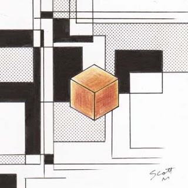

At this time of the morning London's streets are almost completely silent. A couple of hours from now the first delivery vans of the day will make the first deliveries. Five hours from now people will wake up to find that they slept through the murder of hundreds of thousands of children. I imagine that they'll consider themselves lucky. Will they reflect -as they should- that their offspring's survival was a matter of pure chance? A few hours this way or that and the majority of casualties could so easily have been in Europe rather than... I don't actually know where they are. I doubt we'll know the final death toll for days. Anywhere rush hour was, I suppose. The Americas and East Asia, perhaps?
Teekl's walking on my left. She's at lion size, ignoring her surroundings and keeping pace with me in a decidedly non-catlike manner. Zatanna's on my right. She's got her arms crossed at her stomach and every so often she rubs her upper arms with her hands. I had thought that she might be cold, but she kept doing it after I extended my environmental shield around her. I'm not sure... I don't know what else I can say to support her. She used the half hour to change and clean herself up a bit. I'm finding her face a little odd like this; part of cleaning up involved removing her makeup. I hadn't realised that she was wearing any. I suppose that's the aim when it's applied with skill.
I should say something.
...
I look down at the perfectly cubical cardboard box in my hands. Best I could do for a talisman of order. I hope making it with the ring isn't a pr-.
"Do you..?" Zatanna looks away from me to her right. "Do you really think this will work?"
"This?" I exhale. "No, it's... It's not very likely. I mean, it might work. I don't know enough about order magic to really know, but I would have thought... I mean, if they were likely to take exception, I don't think Nabu would have done it."
She stops dead in her tracks, her face creasing on the verge of tears again. "Then {yellow}why{/}, why are we..?"
I turn to face her and put my hands on her shoulders. "Because it might work. Because in the short time I've had to think about this, it's the least violent thing I've been able to come up with and I think we should try it before trying something riskier. Because I don't think, even if he finds out about it, Nabu will do anything about this."
"Couldn't.. I mean, the Ophidian..?"
"Could she beat him in a straight fight?" Zatanna nods, still looking down at the ground. "Maybe. Maybe. If she had some way to stop him just.. teleporting away. But I sincerely doubt that Mister Zatara would survive the fight, at least not without being-" I flick my right hand in Teekl's direction. "-assimilated. Also, I'm... Nabu... I haven't seen him at full power, as powerful as he is now, with your father as a host. It's.. hard to judge exactly what he's capable of." She nods and I see drops of water splash onto the pavement.
No, that {indigo}won't do{/}. I move my right hand to her chin and force her head up. "Zatanna, listen to me. This is not a murder. This is a kidnapping. Whatever happens today, we {green}will{/} free your father. I just don't want to give you false expectations. This will take some time, it could be weeks, months, even years. Not everything we come up with will work, but the {green}end result{/} will be Nabu either back in the Helmet or dead and your father free. Do you understand me?"
Her breath is ragged and she only meets my eyes for a moment before looking away, but she manages a nod. A little shaky, but I'll take it. "Okay. O-okay."
I step in for a hug before turning and slipping my right arm behind her back. "Come on. Not far now." John phoned me back while things were calming down in the cave. He's at the Tate Club now. He said he'd try to get Clarice and Albert there but that he couldn't promise. I try scanning the place but -surprise surprise- the ring can't tell me that it's there at all. I had to tell John about the scry ward problem because I wanted him to try and come up with a way around it. Could he have warded the place because of me? Because of Nabu? Or would a club built to host magic users of dubious legal status have been built with wards incorporated into its design?
"Hey, um. How..?" Her voice sounds a little steadier. "You called the Ophidian 'she'?"
"Yes. Nottt sure how I know that, actually. We had a brief chat when I got back to the cave. She doesn't like what Nabu's done any more than I do."
"Why does..? I mean, I'm not complaining about the help, but.. I didn't think..?"
"Because you-." 'Because you're mine' probably isn't the way to go with this. "Because you're my friend, part of my team, part of how my.. world.. is. Should be. What Nabu's done, disrupts that, hurts you. And since I'm her Agent that.. reduced her as well."
This whole thing shouldn't take more than a couple of hours. Zatanna needs sleep. I can go without if I need to but I don't think there's much I can really do to fix the world after something like this. Oh! Damn it, I need to go back to Gotham and pay the people at Tikka Nights for dinner and check up on Miss Robinson. Ah, both of those can wait for a more civil hour, I want to be around in case Zatanna needs something.
"This... John Constantine. Who is he? I know you've talked about him and I know Dad didn't like-."
"Doesn't. Doesn't like."
Her eyes flick up to me for a moment, then she nods. "Doesn't like him, but I don't know why. And he tried to take the Helmet."
"John..." Where to start? "You're probably better off asking him. Who he is, well, um, born in Liverpool, mother died in childbirth, brought up by his father. His father was murdered by a serial killer known as The Family Man about seven years ago which means the only people left in his immediate family are his sister Cheryl and-."
"Gemma. His niece."
"Yep. He's been involved with magic since secondary school. Not particularly powerful but cunning, intelligent and knowledgeable. Don't think we're going to outmuscle Nabu so he's probably the sort of person we need."
"But how did-. How does he know Dad?"
"I really don't know. Your dad performed on stage in the West End during the nineties so they might have met then. Clarice... Ms Sackville mentioned that she knew, um, both your parents. Anyway, John doesn't... The things he's been involved in over the years, a lot of his friends have died as a result. That might be why your dad was so worried. I don't know why they fell out, or when."
"Is he a.. British superhero?"
"Uhoow, um, I wouldn't... Not in the conventional sense. He does fight supernatural opponents but, no secret identity, no costume, he's not exactly an icon of clean living and he frequently uses his arcane abilities for personal gain. Also, he doesn't think of himself as being one."
"Has he fought anyone like Nabu before?"
"His most powerful opponent to date was a being known as The First of the Fallen. At the time, he was the de facto ruler of Hell."
"He.. beat.. Lucifer?"
"No, Lucifer left of his own accord about, um, thirty years ago? Threw everyone out and locked the gates behind him."
"The.. Plague of Ghosts? That was Lucifer leaving Hell?"
"Yes. Well, you understand I haven't been able to ask anyone directly involved, but as far as I know, yes. The whole.. mess.. only started to get sorted out when Duma and Remiel reopened it. They have de jure authority over the place, but the Demons listened to the First. John outsmarted him repeatedly, and he died with a golden two-pronged sword embedded in his chest. So, yes, fought and beat. If anyone can work out how to free your father, it's him."
There wasn't anyone on the door when we arrived at The Tate Club, though that didn't really surprise me. The cleaning staff -at least, the ones who clean the more mundane areas- would have left an hour ago. Once inside the building I have no trouble scanning its interior and locating John in one of the first floor rooms. Since I don't want anyone phoning the police I light the way through the empty halls with the ring rather than putting the lights on. It's nothing like as creepy as I thought it would be. I mean, this is the centre of borderline evil magic in London, shouldn't there be nameless things skittering just in the corners of my eyes or something? It could be the Spell Eater, but Zatanna doesn't seem to be picking up anything either.
She's leaning on me a little more than she was and she appears to have stopped crying. I wish I could do more but I've never been in the position she's in. My grandparents are all dead but for three of them it was after a prolonged period of ill health and my paternal grandfather died before I was born. Everyone else I... I suppose the nearest I've felt to how she's feeling was in the training scenario after I found out that Alan and Diana were dead, but in that case we were already doing everything we could to fight the things responsible. I also know how I reacted. I don't think Zatanna would do anything that extreme while there was an alternative but I'm probably going to hold off sharing my knowledge of demonology for a little while just in case.
The closest stairs up to the first floor are a little out of the way. They're also fairly narrow and in a part of the building that's less well decorated than the bits we just walked through. I suppose that's because they don't want regular guests coming up here by mistake. Or maybe it's a metaphor about looking behind the façade? Or maybe this is just part of the 'below stairs' part of the building. Not sure. Doesn't matter. I release my hold on Zatanna to let her go up first and then follow along behind her. Yep, cleaning trolleys. Zatanna stops on the landing and I point to the door leading to the main corridor. Definitely better decorated through here. The carpet's complex pattern is slightly faded.. ah, I see, built in runes. Oooor possibly just mystic-looking nonsense. The lights on the walls are designed to look like candle sconces and the ceiling is decorated by plaster ceiling roses. Zatanna waits for me to put my arm around her again before we head in the direction of the room John's occupying.
I go to push the door open and then realise that if John's actively doing anything that may be a bad idea. Doesn't look like he is but the ring doesn't detect magic energy. Or maybe I just haven't learnt how to yet? I reach forwards with my left and knock. Inside, the ring shows me John sit up from painting on the floor with a brush with a look of confusion on his face.
"Yeah?!"
I push open the door then stand aside for Zatanna to enter. Over her shoulder I see John's face go from confused to stunned. On the bare wooden floor John's painted some sort of summoning pattern. It doesn't look like the one for Demons; those are generally just a circle surrounded by warding sigils. This is angular, straight lines and arcs in regular patterns with a central space constructed from many straight lines overlapping each other. Next to him is a small pot of white paint and he's still showing the bruise Batman gave him. As I walk into the room I play a strobe of orange light over it to fix the damage. He's left his coat and jacket in a pile in the corner of the room, along with what looks like a rolled up carpet.
Zatanna shuffles nervously. "Um, hi." John sits back on his haunches as he looks at her. "I.. I want to thank you for trying to take.. for offering to take the Helmet from-."
John shakes his head. "No, no, it's... Giovanni, I owed.. I owe him. It's..." He tilts his head back to look at the ceiling. "Shit. You look just like..." He trails off, then pushes himself to his feet.
"Like.. who?"
"Like your mum. I mean, she was blonde, but apart from that." I glance at Zatanna. Don't really see it myself. John goes to pat his pockets, looking for a cigarette packet that's still in his jacket. He appears to realise this and looks over to it before deciding against getting one. Teekl walks over to the carpet and slouches against it, eyes fixed on John.
I float the perfect box into the centre of the design and release it. Zatanna looks puzzled. "You're going to use that?"
John nods and walks around to the far side of the painted shapes. "The whole point of Neo Vodoun is that regular stuff works just as well as idols of whatsit or icons of bumfluff. As far as most people are concerned a cardboard box is regularih'y and structure, much more than anything obviously magical."
"The box is exactly one metre cubed. The corrugations are perfectly regular and it contains one A four sheet of plain white paper. The Elemental will need something to manifest in."
"Yeah, we're not going for an Elemental. If we're serious about getting someone to overrule Nabu, we need someone higher up than that."
"Another Lord of Order?" Zatanna looks understandably worried. "Is that really a good idea?"
"Things like that, they need something to bind them to the world. Thiss..." He waves his right hand at the still drying paint. "This isn't enough to anchor one for more than a few minutes. If it looks like it's found a way to stick around, we can wreck the floor and break its connection."
"But I thought the drawings were supposed to protect the people performing the ritual?"
"With Demons, yeah. Lords of Order are a different kettle of fish. If we act with respect and don't do anything obviously chaotic it'll probably go okay. Not saying he's just going to say 'yes' or anything..."
"Didn't Nabu say you were chaotic?"
John gives a humourless laugh. "I'm wearing a charm that should make me look a bit more neutral. But if I'm on best behaviour he'll probably take it anyway. The one we're going to try and get hold of is supposed to be pretty diplomatic."
Zatanna nods. "Where should I stand?"
"Just over there." There are three points coming off the edge of the design. John's already next to one, Zatanna takes the second and I remove my Spell Eater and I stand on the third.
"Are my tattoos going to be a problem?"
"Shouldn't think so. He might not be able to see you, but it doesn't really affect how well you can use magic. Right, first step. Paul, you see the design on the floor?"
"Yes?"
"Can you extend it into three dimensions?"
Ring, analyse.
{orange}Logical geometric progression available.
"{/}Yes." I give the ring the nod and orange lines appear in the air mirroring the design on the floor.
"Can you do more than three dimensions?"
Um. "Not without practice. Um, do we need-?"
"No, we shouldn't need it, it's just..." He sighs. "Okay, the ritual's simple enough. Just say: 'By', then the names of three orderly things, then 'Lord Kilderkin of Order, I summon you'. I'll go first, then Paul and then you. Remember, this is Neo Vodoun. The more mundane the orderly thing is, the better. I'll say again, it's not like with a Demon. If you get it wrong it shouldn't matter too much, we'll just keep going until we get it right. If you can't think of something, just stay silent until you do. There's no rush. If I've started, all three of us need to have a go no matter what's going on in the middle. Anything you want t'ask?"
"How do we.. talk to it?"
"Really politely. Don't try to appeal to his emotions, he doesn't really have any. Use logic, rational arguments and back it up with evidence. Don't talk over each other. Take the time to think what you're going to say through before you start. He won't mind waiting but he'll get annoyed if you don't express yourself clearly." She nods. "Okay then. Ahem. By red letter boxes, red phone boxes and driving on the left, Lord Kilderkin of Order, I summon you."
"By a perfect diamond, by pure white light and the music of the spheres, Lord Kilderkin of Order, I summon you."
There's a short pause while Zatanna tries to come up with something. "By the passage of time, gravity and electricity, Lord Kilderkin of Order, I summon you."
The orange light still floats in the air but the filament connecting it to the ring is visibly severed. Paint from John's abandoned tin streams through the air in defiance of gravity and replaces the orange with matte white. I don't think there was that much paint in the tin. We hold our breath for a moment as it finishes but nothing further happens. At least they've noticed us.
John decides that we've waited long enough. "By brick walls, coastal defences and the national grid, Lord Kilderkin of Order, I summon you."
Um... "By Planck length, the Avogadro constant and the degree centigrade, Lord Kilderkin of Order, I summon you."
Zatanna thinks for a moment. I can sympathise. If we have to go around again I'm going to be having trouble myself. "By democratic elections, bank accounts and school timetables, Drol Nikredlik fo Redro, I nommus uoy."

The cardboard box in the centre of the ritual space rises smoothly into the air and.. shrinks... No, not shrinking! It's expanding, but... My eyes ache and I have to blink and look away as the box opens up in what appears to my limited ability to perceive them to be new spatial dimensions. Limiting myself to brief glances I think I can see the piece of paper inside it through some of them. I think it's looking at me.
Objective accomplished, I guess.
After perhaps ten seconds the box seems to calm down. Now that it's no longer inwardly unfolding it doesn't hurt to look at but I start to feel cross eyed when I try following the line of one of its sides from corner to corner. Then, with no real warning, a bald fat man with a Fu Manchu beard, melon skin and pointy ears wearing a navy blue open robe, loincloth and quite a lot of jewellery materialises within the centre of the ritual space. He's holding the multidimensional box with no apparent difficulty and floats off the ground with his legs bent up under him. If he were standing on the ground he'd probably be about one metre sixty tall. As it is he's above us and is holding the box at convenient head height.
"I have the honour to be the personal slave of Lord Kilderkin, a Manifestation of Order, here incarnated in the form of a sheet of paper."
Part way between sublime and ridiculous. I'm not sure how the thing is supposed to be 'orderly'. His eyes aren't really focusing on us. Zatanna and I look at each other and then over to John.
"Miss Zatanna Zatara." The box doesn't turn. The space around and within the box distorts and the box is facing Zatanna. "You mixed two forms of magic during an unfamiliar ritual contrary to the instructions of your moderatus. This is an incorrect procedure."
She looks at me then at John in a minor panic. I make a small shrugging gesture. John nods at the box. She opens her mouth and closes it, getting herself together. "Lord Kilderkin, I apologize if I have offended you."
There is a brief pause. Is Kilderkin thinking about it or waiting for one of us to speak? "Your apology is irrelevant and unnecessary. You acted contrary to both order and good sense. You are young and have been chastised by one who is your senior. How you feel about it, your degree of 'sorrow', is irrelevant. In species such as yours maturation is often marked by a gradual transition from chaotic to more orderly forms of behaviour. You are not yet fully mature. Endeavour not to repeat your mistake." The universe within the ritual space warps again and the box is facing John. "It is unusual for one such as you to call forth one such as I. Speak your piece."
"Kilderkin, Giovanni Zatara is my friend and Zatanna's father. Nabu used Zatanna as a hostage to force him to agree to allow Nabu to use him as a host. We'd like to request that you instruct Nabu to release Giovanni, and are prepared to negotiate an exchange to facilitate that."
"Please wait a moment while I review his case history." The space within the box spins and looking away looking away!"Please confirm; to the best of your knowledge, is the Lord of Chaos named 'Klarion the Witch Boy' presently active on this planet?"
John points at me. If spending time with Diana has taught me anything, it's that being completely honest doesn't mean you have to say everything you know. "My understanding-" Space distorts again and I {green}force{/} myself to maintain focus. "-of the term 'Lord of Chaos' is not good enough to reliably answer that question. I can confirm that there is a magic user by the name of Klarion active on this planet. During our first encounter I either cut or substantially reduced his ability to use magic. When last I saw him he was dependent on an unidentified type of Elemental to power his spells. As such, I am not sure that he still qualifies."
"How was this achieved?"
"He used his cat, Teekl, as his familiar and bond to the Plane of Chaos." I lift the ring to display it to him. "I am an Orange Lantern. Assimilating Teekl allowed me to have her close the link. My understanding is that it will be difficult for him to form a replacement familiar bond."
"As a Lord of Chaos Klarion had access to extremely large amounts of arcane power. However, raw power is not his only strength. Anyone who manages to become a Lord of Chaos would have to demonstrate an exceedingly high level of arcane skill." Something twists within the box. "Skill enough to generate a planar fracture to separate adults from children, for example."
"My Lord, while I will not deny that he is dangerous he did that as part of a group, and despite Bedlam's power he used a crystal to channel the energy to make the ritual work. Furthermore, the ritual site was warded against scrying. Even if Nabu had a host the moment the spell started he would not have been able to locate it faster than we did."
"I have more faith in Lord Nabu's abilities than that. If he had a host earlier he could have hunted Klarion and the other participants down before this became an issue."
"If.. that's.. your price, we can do that."
"It is not. Lord Nabu's skill set makes him uniquely capable in that regard. Though it is within my power to overrule Lord Nabu's decision I am strongly minded not to do so. What can you offer to counterbalance the loss of a Lord of Order in the field?"
"Klarion's familiar."
Another distortion results in Kilderkin looking at Teekl, who stands and regards him with decidedly unfriendly eyes. {orange}"RrAAAooooooowwwww."{/}
"She currently provides him with no power. I doubt that you could return her to him even if you wanted to and I do not believe that you do want to. Were she active your offer would be worthy of consideration. As it is I see no value in it."
"If people find out that Lords of Order {red}take over{/} people's bodies they will want nothing to do with you."
The box orientates on Zatanna again. "I do not believe that you are correct. You are distraught at the loss of your father, while worldwide millions grieve for their lost children. You will find that most of them would consider the loss of your father an acceptable sacrifice in order to prevent a repetition of that event and to prevent other similar events from occurring in future. As you grow older you will come to understand the value of objective utility. Your father may have sacrificed himself for you, but by doing so he will save far more lives than he could have done separate from Nabu. Furthermore, I believe that you have incorrectly predicted the actions of your superiors."
What's that supposed to mean?
"Alright then." John's face hardens. "Exactly what would you want in order to set Giovanni free?"
"Something of proportionate value. Since the primary justification for his presence is the reciprocal presence of a Lord of Chaos, you will find me far more amenable to negotiation if Klarion is dead. If, as you say, he has been significantly weakened by you denying him use of his familiar then this task should be well within your abilities. Is there anything further you wish to discuss?"
"Oh, Zatanna, poppet." Ms Sackville gives Zatanna a boney hug. "John told me what Nabu did to Giovanni, that beastly thing!"
"Zatanna Zatara, Ms Clarice Sackville."
She was sitting at her accustomed table when we got back downstairs but got up when she got a look at Zatanna. Mr Case has gone to fetch a pot of tea. The lights immediately above us are on but the rest are off. The other tables are bare and the dark wood makes the place look even gloomier. Ours has a basic tablecloth and.. a photo album. Ms Sackville leads Zatanna to a chair and then sits down herself. I sit on Zatanna's other side, John sits next to me and Teekl flops down behind Zatanna and starts licking her right forepaw. Zatanna looks kind of drained. She didn't fall apart after Kilderkin and his slave vanished back into the Plane of Order or whatever it's called but I think she's still in shock over the whole thing.
Ms Sackville pulls the album over. "I had Albert get this out of the loft." She opens it a little way in from the beginning. For a moment I wonder if it's going to be some black and white tissue-paper-between-the-pages job, but it's full colour. "We took these when your parents were in London, before you were born." Zatanna nods and pulls it closer.
"I didn't... Were you friends?"
"Not sure I'd say that. Your father might have grown up with stage magic, but he was still finding his feet with the real thing when we met."
I see a photo which looks like it was taken in the room we're sitting in now. Albert looks younger, although still hard worn. Mister Zatara looks younger as well. Ms Sackville looks exactly the same. Missus Zatara... I'm not sure what John meant earlier. She doesn't look that much like Zatanna. I mean, there's a resemblance, but it's not all that. I don't remember Sindella Zatara from the comics at all though I had the ring acquire pictures when I started researching Zatanna. Don't know exactly how she died, but it was some time before Zatanna was two. The photo looks as if someone walked up to the group and gave them a few seconds to pose before taking it.
Come to think of it, I've not... No, the ring can't track.. ah. Her paternal grandparents are both deceased, though she has aunts, uncles and cousins in Italy. Nothing on her mother's family. What exactly is she going to do now? Is she going to move over there? Does she even speak Italian? She can probably manage on her own for a while, depends how long dealing with Nabu takes. Have to ask her about it, tomorrow.. well, later today.
Zatanna turns the page and Ms Sackville pulls her chair around a little towards her. "How did it go with that thing you summoned upstairs?"
Zatanna reaches out to touch a page with her parents, John and a group of other people I don't recognise in a pub. "He-. He said that the only thing we could do that would make him order Nabu out of Dad would be killing Klarion."
"It's what they do." John puts his elbows on the table and leans forwards. "You give anyone.. -anything- that sort of power and they can't resist lording it over people. If Giovanni was willing to put the Helmet on full time, he'd have been fine putting it on part time as well. They just didn't care."
"So. Are we interested?"
"I-." Zatanna looks at us, then drops her gaze back to the album. "If it's the only way... Maybe we could just hand Klarion over?"
John shakes his head. "Catching him and handing him over'd be a lot more difficult, and it's not exactly easy to start with."
"It occurs to me... Lords of Order and Lords of Chaos are.. similar, right? They work in the same sorts of way?" Tentative nods from John and Ms Sackville. "Then any technique we develop to attack Klarion would probably work on Nabu. I.. don't have faith in the forces of Order right now. Kilderkin had a point, we do need to do something about Klarion... But.. if this is how Nabu treats people..."
John gives me an incredulous look. "You wanna get them both? Psssssh, don't think small, do you?"
"If our primary concern is freeing Mister Zatara, then an alternative we may wish to consider is working with Klarion. He hates Nabu, maybe more than he hates me. Is that something we want to consider?"
Zatanna looks straight at me and shakes her head. "No. Not after what he did."
"Okay then. So, investigate both of them?" Nods all round.
John pulls out a cigarette and taps it against the table. "First problem with that: we know sod all about them. I'm game, but it isn't exactly gunna be-."
"How good's your necromancy?"
He narrows his right eye. "Why?"
"I know where his previous host is buried. Nabu said that Mister Nelson tried to persuade him not to do it. I can't think of anyone who'd know more."
Zatanna's shocked. "You can't turn Kent into some kind of zombie!"
John grimaces and shakes his head. "It wouldn't work like that. We do a séance, speak to his ghost for a few minutes." He pauses for a moment, looking at Zatanna. "I can do it, if that's something you're okay with."
"I don't-. Is there something else we could try?"
"A-. Green Lantern, the one from the Justice Society, has all his old books. He'd probably let us read them. I don't know how much help they'd be."
Clarice looks at me sadly and slowly shakes her head. "Dear boy, don't try turning into John. We've already got one of him and he's plenty. Read the books first, then try the dark magic."
I nod. Yes, that's probably a better idea.
"Alright, second problem." John looks at me then Zatanna. "What was Kilderkin on about when he said that we've 'incorrectly predicted the actions of our superiors'? What have the Justice League people said?"
I shrug and look at Zatanna. She looks down and shakes her head. "Batman just asked the others to get me back to the.. um, our base. I don't know what they're going to do about the whole.. thing."
"John, Batman's Giovanni's friend, and the rest of them aren't going to tolerate this any more than I am. Only reason I didn't get Wonder Woman to join us was because I don't know how good Nabu is at reading minds." Her League file lists her as 'highly resistant' but I don't know if that's 'Lord of Order resistant'.
"Yeah, well, I was his friend and look how well that turned out."
"W-. What do you mean?"
John shakes his head. "Oh, it's not... I'm not used to people who just-."
Ms Sackville glares at him. "John, you owe her." He flinches. "She's going to find out eventually."
"Find out what?"
John sags, staring at the middle of the table. "Was in ninety seven. I was..." He breathes in deeply and then out again. "I'd run into this group called the Brujería. Right nasty bunch of..." He shakes his head. "Thought they were just some crazy cult, 'n they are, but they've got the power to back it up. They wanted to summon up some sort of primordial.. evil.. thing. Never worked out what they thought they'd get out of it. I didn't even find out exactly what they were up to until they were already onto me. They killed the people working with me and I only got out by dumb luck." He leans back in his chair. "And then I did what I always do: went to my friends for help. A bunch of us got together; Steve Dayton -he was a bit less mental in those days-, Richard Occult, John Sargent, Baron Winters... And Giovanni and Sindella Zatara."
"Nineteen ninety seven... That was the year-."
"Yeah." John nods, the misery plain on his face. "I was the one who got your mum killed. S'why... Why Giovanni hates me, an'... And he's right to. I've failed.. my friends.. a lot, but I've never done it to one who had a fourteen month old daughter before." He takes a breath and finally meets her eyes. "He hates me and you probably should as well, but... I'm not letting it happen again. I'm not... We're going to get him back, alright? I couldn't live with myself if-."
Zatanna's chair shoots back as she jumps to her feet, turns and marches away from the table. I sit there in shock while John brings his hands up to cover his face. "Fuck."
Fuck. That was how Giovanni died in the comic, and this time it was... "John, Ms Sackville, that was not helpful."
Ms Sackville glares at me. "She would have asked eventually."
"But not tonight!"
"Then when? When would be a good time to reveal something like that? If we're working together she'd be asking us about how we knew her father, 'cause she misses him. How long d'you want us to keep schtum for? A week? A month? Now, you're right; we can't let Nabu get away with this. Klarion neither. Working out how to-."
Zatanna's collapsed to the floor next to the door we came through to in the main room. I exit FTL squatting against the opposite wall and try to work out how I can fix this. If she refuses to have anything to do with-.
"Did you know?"
"What?"
"{red}Did you know{/}?"
"No! I wouldn't have... There's no record. Missus Zatara's cause of death is listed as a stroke on every file I saw! There was-. I didn't-."
"Dad never told me why he was so scared when you started talking about him. He wouldn't tell me-. How can I work with someone like him!"
Take a moment. Think it through. "Zatanna, a few hours ago we were on Roanoke Island fighting Klarion. And if he'd been a bit more intelligent when I charged him, or a bit more on the ball when Billy appeared or.. or a bit luckier, any one of us could have died. Kaldur was in charge of our team. Would it have been his fault? Or after he was injured and I took charge, would it have been mine?" A pained, gasping breath and she bows her head. I squeeze my eyes closed and rub my forehead with my right hand. "They shouldn't have just sprung that on you like that. I'm.. I'm sorry."
"How many of the others died?"
Ring, access records. "The time of death of Mister Sargent suggests he died as well. Mister Dayton has a range of prescriptions, antipsychotics, mood stabilisers.. few other things. Of course, pharmaceuticals won't necessarily work if the cause is magical. Doctor Occult survived and I can't find good records for Baron Winters." Who else? I've got a long list of John's late friends stored. "Benjamin Cox, Franklin North, Emma Young and Anne-Marie Mason. All of them were friends of his. I've got no way to know which of the other deaths that happened at the same time were caused by the same thing, but there's a noticeable spike-."
"Stop. Please, stop." I stop. "Dad knew, didn't he? About all those other people. And Mom..."
"Almost certainly."
"That's why he's so protective of me. I thought it was just him being..."
"Yeah. What we do, is dangerous. No two ways about it. We train, we carry advanced equipment-" I tap the Spell Eater where it hangs on my chest. "-and we try and be sensible about our abilities, but... We can die. And not because we messed up, just because the sorts of people we fight are people who are capable of killing us."
"So why did he join the Justice League? Why did he keep being a superhero?"
"I don't know. I don't know what his reason was. Why are you doing it?"
"I wanted to help people. I want to.. to be like Dad." She sits up a little straighter. "What about you?"
"Have you ever looked over someone's shoulder at a crossword.. or test or something, and just found the answer really obvious? Sometimes, when I look around the world, at what people are doing, the way society works... That's how I feel. There's no reason for magic not to be mainstream. There's no reason for research into mad science type technology to be so slow. There's no reason... I want to make the world work properly. To do that, I need a good reputation and I need contacts."
"You don't want to help people at all?"
"I have an orange power ring. If I want to help someone, I have to care a great deal about what happens to them. For you, for our team mates, that's easy, but I had to abandon injured children in Gotham because their individual well-being didn't matter to me enough to trigger the ring. But, by doing so, I helped stop the spell that bit earlier. As a result, more people live." I look away slightly and shake my head. "I hope, anyway. See, the fact is, objectively, a life is a life. But it feels different when it happens to you, to people you care about. Except.. it's not, not really. Six people die and one man goes mad, and everyone else on Earth gets to live."
"Is he really..? Is he the best chance we've got?"
"If I knew someone better we'd be there instead. And-" I look at him through the wall with the Ophidian's Eyes. "-he's completely motivated to see this through. If you can't stand to be around him then-."
"No. No, I shouldn't-. It's just... I don't remember Mom. All I had were Dad's stories and photos and now Dad's... And he just comes out with it..."
I reach over and pat her on the knee. "Do you want to go home? Or, I don't know, we've got plenty of space at the cave if you want to stay there for a bit."
"No, we need to finish.. sorting out what we're going to do." I stand and offer her my right hand. She takes it and pulls herself up. I have the ring open the double doors back into the main room and we walk through arm in arm.
Albert's finished organising the tea. The pot and six cups are on the table and he's taken the seat between John and Ms Sackville. There's a hip flask next to John's. We slowly walk over. Zatanna looks directly at John. "Paul and I can talk to Green Lantern. What are you going to be doing?"
His head stays tilted down but he manages to raise his eyes to meet hers. "There's.. this guy I know. He's involved in high level chaos magic. Dunno how much help he'll be but I can try and get hold of him."
Ms Sackville nods. "I'll put the word out that we're after information on Klarion. Should be able to get hold of a few books on Order and Chaos. We can see if we can find out-."
A phone rings. After a momentary delay Albert reaches into his jacket pocket and fishes a modern looking mobile out and answers it. "Wot?"
Ms Sackville frowns at him but presses on. "See if we can find out anything helpful. You'd be amazed what people can just shove in a lock-up somewhere and forget about."
Albert looks like the phone call is displeasing him. After a moment he holds it a little away from his ear. "'Ere, Clarrie. Some berk called Cyril's on the phone. Sounds like a nonce. Want me to tell him to fuck off?"
Ms Sackville sighs. "What does he want?"
"Somefink about Demons in Liverpool. Oh, 'ang on. John, it's yer sister."
"What?" John suddenly comes out of his funk and grabs the phone. "Cheryl?" He winces. "Yeah, I-. I know, it wasn't-." He listens to her for a moment. "Yeah, look... Okay. Tell him I'll be there. Yeah, sure." He moves the phone away from his head and hangs up before passing it back to Albert.
"Well?"
"Don't ask me how, but Cheryl somehow got hold of Sir Cyril. You know, Knight?" I nod. "Those Praexis Demons you ran into wouldn't have just turned up on their own. He wants me to help him track down where they came from."
"Right, I'll come with you. Don't feel much like sleep. Zatanna?"
Ms Sackville shakes her head. "No. You're taking her straight home."
I frown at her and look at Zatanna, who nods. "Yes. Could you.. take me back to the cave, please?"
The punching bag lies strewn across the gymnasium floor in tatters.
"{red}Uuh uuuh{/}!"
A little further along the floor the heavy bag has suffered the same fate. A cloud of slowly settling dust marks the final resting place of the rubble bag and the heavy metal punching block lies in torn pieces where I've ripped it apart. I'm now working the force field pads in a frenzy of concussive impacts.
"{red}Uuh{/}. {red}Raah{/}!"
The energy shield around the upper right one fails under the impact of my fist. This isn't working. I came back from China in a filthy temper. I was alright going there, but being kept hanging around while they decided what to do about me left me plenty of time to think about what happened on Roanoke Island, and the more I thought about it... The {red}angrier{/} it made me. I hoped that I'd be able to work out my aggression with a little mindless violence in our gymnasium. It's {orange}been{/}.. four hours. Haven't calmed down noticeably. I've got no idea what the others are up to and frankly I don't really want them to have to deal with me while I'm like this.
I stare at the pads. "{red}Ring, repair and recharge them{/}." Nothing happens. "{red}Rrrrrrhh{/}!"
Footsteps behind me. Boots, heels. I narrow my eyes, still facing the pads.
"{red}Wonder Woman. I wondered who it would be.{/}" She takes a breath to start speaking. "{red}Before you start, I'm going to tell you what I occasionally had cause to tell my mother before coming here. I am in an absolutely foul mood and it's taking me quite a lot of effort to remain this polite. I'm really not fit for civilised company at present. Come back later. A few hours... Tomorrow, perhaps.{/}"
"I'm afraid I can't do that."
"{red}Then on your head be it.{/}"
"Grayven-."
I turn on her, eyes blazing. "{red}What the fuck was that{/}! {red}What did you people think you were playing at{/}?! {red}Mister Zatara nearly ended up spending the rest of his life as Nabu's meat puppet{/}! {red}You all just stood there{/}!"
She remains calm, gazing levelly at me. "Are you finished?"
{red}Words fail me{/}. {red}I growl under my breath and shake my head, not trusting myself to look at her{/}.
"Zatara agreed to take on Nabu to save Zatanna. His choice-."
"{red}Nabu was holding Zatanna hostage{/}! {red}No such deal could be considered to be freely made{/}! {red}You, or Stewart, or Batman{/}... {red}Any of you could have taken the Helmet from him{/}!"
"Angering someone as powerful as Nabu has other consequences-."
"{red}So we deal with them{/}! {red}That's what we're for, isn't it{/}?!" I turn away and lean against the pads. "{red}It shouldn't have had to be me{/}. {red}You're supposed to be his allies, his team mates, his.. friends{/}. {red}I don't even like him that much{/}!"
"You believe we should have interrupted."
"Yes. Such a sacrifice would have been completely pointless. I... When Robin stood up to me when we were dealing with those godlings... He was right, and I was wrong. I was having too much fun to stop and consider the wisdom of my actions and he needed to blow up my objective to make me see that. My respect for him... And I thanked him for it. My friend, stopped me doing something stupid. You, you just..."
We stand in silence for a few moments. Huh, I actually feel a little calmer now. Maybe I should have just found some random person in the street to shout at hours ago.
"What did you do with our prisoners?"
"Shouldn't you be out doing something? The ring estimates that the death toll from that spell was at least seven hundred thousand."
"Grayven, I need to know."
"It'll be public knowledge in three days anyway. Frankly, you can wait. If you've got nothing better to do I'm sure that you could make yourself useful helping track down Klarion."
"Did you kill them?"
I frown. Ooooh. That's why I'm getting prioritised. I suppose it's not an unreasonable guess. "Hundreds of thousands of children dead. That'll rise, of course. Injuries. Suicides. Only bothers me in the abstract, really. Everyone I know well enough to care about is old enough to look after themselves."
"Grayven, did you murder them?"
"Of course, that's the same for you, isn't it? Amazons don't have children, the only Justice Leaguers with offspring are Batman and Mister Zatara..."
"Peter Garibaldi is the Themysciran embassy's media relations officer. He has two young sons and the first thing I did when the fight was over was make sure they were alright. Now answer me."
"He was fortunate. You can find out when the bereaved do. Three days."
I hear her hands slide over the rope of her lasso. "That isn't good enough."
I turn around to face her again, grinding my teeth. "{red}If I were going to kill them I'd have done it then and there where you could all see me do it as a judgement on your ineptitude{/}!" I take a deep breath. "But while this incident has completely destroyed my faith in the Justice League my faith in humanity remains. Justice will be done."
We stare at each other for several seconds. "What. Did you do. To them?" I just shake my head. "Grayven, ........................................."
Her lips move, but I hear nothing. "Hah hah haaah! You just tried to give me an order, didn't you?" I tap my right ear with my right index finger. "Half second delay. If the ring thinks you or Batman are about to give me an order, I suddenly go deaf." Actually, Father Box handles it but I've managed to keep his existence a secret so far. The technique was obvious, really. It was just that before today I hadn't thought that I'd need it.
This clearly doesn't please her. "You swore that you would obey my commands. We trust you with Alan's lantern because you made that oath."
"I swore obedience to a woman I trusted and I don't trust you with that authority anymore. And if you were relying on that then you severely misjudged the situation. If you relied on that, if you used that oath to compel my obedience to every request you made, what do you think would be the very first thing I would do when the year was up? If you'd failed to make me want to follow your lead? When I was finally free I'd-. I gave you a year, not so you could restrain me, but so that you would..."
I raise my right hand to my face. Oh. I hadn't realised that myself until just now. "So that you would have time to convince me that your way of doing things was right. Zard, Wotan, Faust and Thorn were all murderers before yesterday. All known to you and to the police. If it were just me, if I didn't care... If I'd gone to Louisiana to fight the Injustice League on my own... I'd have killed them all then and there. Wouldn't even have broken the law doing it. I held myself back because I.. I wanted to believe that the League's way of doing things was right. That mercy and restraint are really the best way to deal with these things." I shake my head, lower my hand and look straight at her again. "But they're not, are they? It doesn't work. Because four murderous wizards didn't die years ago hundreds of thousands of children died last night. And I may not care about them as individuals.. but I do care about the species as a whole. It-. It's appalling. It doesn't work. Doesn't work." I turn back to the pads and make fists, but my heart's not really in it. "Leave me in peace. In a few hours I'll go out and help with the damage limitation."
"The fact that something like this happened doesn't invalidate the things we fight for. If we can't hold ourselves to a higher standard than supervillains then what are we for?"
"Tell it to the dead." I punch the mid left target, then lean against it. "I wanted to be wrong so badly, you know? I didn't really want the responsibility of deciding everything for myself, not until I understood.. more. Now, don't have that luxury."
I hear her take another step towards me. Oh, what does she want now?
I feel her hand on my left shoulder.
{red}How dare she{/}?
"{red}I'm stronger, faster and better armed than you get your hand off me{/}!"
I nod at the young woman in the yellow, green and black tabard. "Morning, Squire."
She looks up from her computer with her eyebrows raised, rolls her eyes at me, then looks back down. Beryl Hutchinson's sitting on the bonnet of a police car. She's fifteen in this continuity, actually a little older than Robin. Sir Cyril's over near the police cars talking to the Chief Inspector in charge of the operation. The whole area around this part of the dock was cordoned off by the Merseyside Police once John and Trevor Marrack narrowed the site of the summoning down this far. Another set of scrying wards is blocking us from working out precisely where it is, though since Demon summoning actually requires magic knowledge that might not be connected to everyone else suddenly finding out about it. Fortunately, Fatty and his friends left a trail that wasn't protected.
I sent Teekl back with Zatanna and instructions to look after her. Spending all the time she has with Wolf appears to be bringing out her mothering instincts. At the side of the road there's an armed response unit nearby checking their weapons. UK police are trained in dealing with hostile metahumans but they aren't equipped with anti-Demon weapons and sounded decidedly unhappy about having to check the area building by building with no real idea about what they'd find. They brightened up once I made it clear to them that I'm taking point now.
"Saw the interview you did in Taiwan." Miss Hutchinson's checking through three dimensional architectural plans of the buildings we're about to enter.
"Don't suppose there's any chance you didn't see the cake thing?"
A small smile. "Not bloody likely."
I tighten the left corner of my mouth slightly. "Anything on the plans that doesn't match my scans?"
She shakes her head. "So I did a ring-round last night." One warehouse disappears and is replaced with an office building. "Only British superhero under eighteen I couldn't get hold of was Cornwall Boy. In fact-" Another image. Storm drains, I think? "-Captain Cornwall didn't sound like he knew where he was. Worrying, that."
"We don't get.. very good signal."
"Who's 'we' when we're at home?"
"Young people undergoing instruction by members of the Justice League."
She tilts her head and looks at me out of the corner of her eye. "Sidekicks."
"I believe the term my colleagues would prefer is 'partners'."
"So, that'd be Robin, Kid Flash, Aqualad, Red Arrow, Troia, Artemis, Zatanna and you, would it?"
"Nnnnnnnnn... Most of them. I'm not really supposed to say what the full roster is."
"Should I be offended?"
"I only stopped to pick up R-. Cornwall Boy, because we were desperate for magic users. Your skills... Your unusual skills lie in data analysis and we didn't really have any data to analyse."
She turns off the computer and gives me her full attention. "So what exactly happened last night?"
"In summary, five extremely powerful and extremely unpleasant magic users somehow managed to divide the Earth in two and put nearly everyone over eighteen on one and nearly everyone under eighteen on the other. The League and.. hehr.. the sidekicks attacked the site of the ritual and stopped it, but not before a lot of people died."
She thinks about it. "Car crashes.. an' planes an' that?"
"Mostly. Europe got off lightly because of the time zone. In other places it was..." I see the bridge again, and rub my forehead with my right hand. Probably better I'm here rather than sleeping.
"God." She looks to her left as she tries to get her head around the death toll. "I just.. I heard some crashes. Got the kids out and went up to the castle. Didn't realise..." She shakes her head. "Who was it that did it?"
"Klarion, Blackbriar Thorn, William Zard, Felix Faust and some guy in a robe I didn't recognise. Klarion and robe guy got away, Batman's got what's left of Blackbriar Thorn and Zard and Faust are being detained at Nabu's pleasure."
"Who?"
"Nabu. Er, Fate, Doctor Fate."
"Having trouble with the 'real names' thing?"
"Nabu's naturally non-corporeal. I doubt he has a secret double life."
"What's this robe guy look like?" I pop a screen out of subspace and display what I saw of him. She nods. "Dark Druid. Don't know much about him." She looks thoughtful. "Not sure anyone does. Show me that attack again." I replay him blasting Guy and Stewart. She shakes her head. "No, nothing like that. Last time I saw him, he was legging it after Cyril and me caught him trying to burn down a church."
"Why was he doing that?"
"A lot of churches in this country are built on the holy sites of older pagan religions. He was targeting them. He'd ritually sacrifice a bunch of animals and then burn them down."
"Were the sacrificial rituals actually.. magic? Or was it just to freak people out?"
She shrugs. "Never saw anything happen as a result. Might be worth getting Captain Cornwall or.. John Constantine?" I nod. "To check them out."
"Do you know where his name came from? I didn't think druids really went in for-."
"Oh. Um. That was me."
"Dark... Druid..?"
She blushes a little. "I was twelve, alright?"
"I've heard worse. Think he got an upgrade from somewhere. If you could send me the reports-."
"Alright you two, over here!" Sir Cyril waves us over. John and Mister Marrack are already with him. Miss Hutchinson drops off the car to walk over to them. I send the screen back into subspace. I need to make sure they let me go in first. I don't think Sir Cyril's ever worked with a Lantern before. Hm. A flicker and I appear next to John at FTL speed. Sir Cyril's head turns slightly but his helmet obscures any surprise he might be showing. I was slightly impressed to learn that his armour and weapons are enchanted. Might be more impressed if I had any idea how good it is. I mean, I've seen videos of it stopping rifle bullets, but I don't know the mechanism it uses. Miss Hutchinson's gear is a bit more mundane but still of high quality. She apparently had the sense to wear armour over her torso, though the leggings are unarmoured. "Right then. Someone's been summoning Demons. We can't be having that, so we're going to go in there and put a stop to it. We don't know how many Demons, cultists or what have you there are, and we don't know if there's any hostages."
John removes a half smoked cigarette from his mouth. "Shouldn't be anything too big." He exhales a stream of smoke and takes a look at the target area. "It'd be too noticeable, even round here. 'Course, if a Demon's actually runnin' the show..."
"Well, anyway, armed response is here to back us up. We're going in once the police've got all the exits covered. I'm going in first, Captain, Orange Lantern, Squire, you're after me. Constantine, I'll call you in if we find something magical we need you to take a look at."
"Sir Cyril, I'm quite a lot more resilient than you. It really would make more sense for me to take point."
He shakes his head. "If there's anyone there, they're going to be using magic. My armour's warded against stuff like that."
Ring, remove torso armour. "So's my skin, sir. In addition-" Ring, restore armour and add construct-armour. "I can tank quite a bit more normal damage, as well as being able to relay information from my direct scans back to Squire. If it comes to it I can also run away a bit faster. Sir, I really think-."
"Alright, alright. Made your point." He stands aside and extends his right arm in the direction of the closest building. "After you."
First building was an empty office block. Bare walls, mould and a couple of sleeping homeless people who were escorted outside. Once I got well inside I ran filament constructs throughout the corridors. Finding nothing, the others entered and John and Captain Cornwall tried detecting anything untoward. Nothing obvious, so we proceeded through the building at walking pace, stopping every ten metres or so to repeat the process. I wanted to go a little faster but Sir Cyril was pretty definite, and he's both in charge and has more experience than me. His justification was that there's no way for our target or targets to get out by conventional means so the most important thing is to be sure that we're not missing anything. Slow and steady might not always win the race, but at least it doesn't end up splattered all over the walls.
Anyway, roof to boiler room, nothing. No cultists, no kidnap victims and no Demonic unpleasantness. John found that suspicious as cults and Demons are usually both pretty territorial. Next was a series of large gutted terraced housing and it was the same story there. No indication of demonic presence. John's confident that they couldn't hide themselves completely even if they could obscure their precise location, so we move on and the police tighten the cordon behind us.
The five of us are now standing outside of a distribution warehouse. Not all that long ago shipping containers were unpacked and their contents loaded onto lorries to be transported across the country. Not really sure what happened. Import of manufactured goods is still big business in Britain. I know Liverpool's been through some hard times economically and our manufacturing output has decreased but shouldn't somewhere like this still be in operation?
I look at Sir Cyril. "Point of entry?"
Squire brings up an image of the interior. Of course, most of the equipment's probably gone. Looks like it's a choice between the old staff entrance and two fire doors. Any of us could open the main goods entrance and I could easily break through one of the walls but we're aiming to contain and that means no new places for potential targets to escape out of.
"Not much to choose between them. Constantine?"
John walks over to the outer wall and lays his hands against it for a moment before shaking his head. "Nothing."
"Might as well use the closest, then."
I nod and use a construct appendage to gently remove the lock before cracking open the door and sending a filament into the building. More filaments radiate off it, sending data to Squire's computer. Just confirms what we thought was there: corridors, what was once a locker room, stairs up to the offices and an entrance way to the warehouse section. I look at Sir Cyril and he nods.
Ring, accelerated perception.
{orange}Compliance.{/}
I appear in the locker room and scan my surroundings with my eyes, switching between normal and Ophidian vision. Nothing out of the ordinary. Not sure why they left the lockers here. Maybe they were too much of a pain to get out? Or maybe whatever estate agent picked this place up was hoping to sell it on in working condition?
Normal perception.
I still feel a little unwell using it, but better a little unwell than getting mobbed by Demons as soon as I appear. I send filaments into each of the lockers. Nothing. Ceiling space? No. "Locker room clear, proceeding to corridor." There was a card reader system but the lock appears to have been forced. Cultists or more homeless people? Can't tell. Nothing in the corridor but dirt. No obvious tracks... "Corridor clear. Come on in."
I turn away from the door as Sir Cyril comes through, turning sideways so that his armour can fit. I put their position on my HUD and walk to the foot of the stairs. From the top or do the ground floor first? Hm. I hold out my left hand, palm flat to the floor. I'd rather have Teekl do this, but... I tap the back of my left hand with my right and Fatty falls out of the ring. It lays on its belly on the ground for a moment, its fat head swinging left and right. A moment later it stops and stares at me, its face hopeful.
{orange}"Food?"
"{/}Why are you laying on the floor when you can fly?" It looks to the side for a moment, then floats into the air as if someone is lifting it from the shoulders. It slouches into the air, looking at the ground in apparent confusion. "Go up the stairs and let me know if you see anyone.{orange}"
"Food upstairs?"
"{/}Stranger things have happened. Go." Fatty accelerates up the stairwell. At worst he'll be able to give me a few seconds warning. Need to find out whether he can actually fight or not.
"Erm, what was that?"
I turn to Sir Cyril. "I assimilated that Praexis Demon last night. Now it works for me. Sorry, my other Construct-Lantern's far cleverer but I left her at home."
"Rrrright. And it knows what it's doing, does it?"
"I.. honestly have no idea." Sir Cyril doesn't seem to have another question so I walk towards double doors leading to the loading bay.
Glancing back I see John taking a look around while Captain Cornwall watches him. "Feeling something. Dunno. Not very strong. Might just be an imprint from all the people who used to work here."
I push open the doors ahead of me with a construct and send out feelers. Nothing organic feeling, though there are a number of slightly rusted shipping containers. I transition myself to the air in the middle of the room. Nothing even slightly demony, and Fatty's just looking at empty offices. There aren't any windows in here and the lights are off so it's a bit dingy. "Clear. Generating light emitting constructs."
Sir Cyril leads the way again. He takes a look at the room and draws his sword. It looks like a simple arming sword, but down the flat of the blade on both sides runes are picked out in silver wire. They're glowing, but I don't know if that's in response to a threat or just what they do. He heads into the room and towards the right.
As the light spreads across the room I take a look around. Abandoned and partially deconstructed shelving in the rear area, a few cardboard boxes and five metal shipping containers. Bit sloppy, but I suppose when your company goes under the motivation to do a thorough job just sort of leaves you.
Captain Cornwall comes through the door next, air bending aura thing in place. Need to find out what that's actually called. He walks left towards the bay doors. John and Beryl bring up the rear. John looks around and smirks. "Alright, what's wrong with this picture?"
Beryl thinks for a moment. "Should be more dust?"
"Nah." He walks towards the nearest shipping container and peers at it. "This place has been out of use how long?"
"Eight years."
He nods. "Makes sense. And no one's going to bother clearing a place like this out completely. But shipping containers are expensive, they're designed to fit on the back of lorries easily and the door's right there. Why.. are they..-" He reaches out towards it with his right hand. "-still here?" He holds his hand just over its surface.
Fatty falls out of the ring onto the top of the central shipping container. It lands with a thump, and.. there's another quiet noise from inside. It pushes itself back to its feet. {orange}"Funny painting."{/}
John's eyes narrow as he looks from Fatty to the shipping container. Then he presses his hand against its surface. "What're you hid- OH SHIT!" He yanks his hand back. "They're in the shipping containers! They're in the shipping containers!"
I flick on Ophidian'sEyes and AGH! Fuck! For a fraction of a second I see a nightmarish network of black lines and what looked like the outlines of people before something... Something. Wholeness Rightly Assumed. Ah. Better.
And then the giant baby tackles me out of the air.
The head is too big. It brings frighteningly sharp teeth down onto my shoulder construct-armour and all I can think about is how big it is. Its arms are scrabbling at the construct-armour around my head but there's no way... Urgh! It doesn't have joints! Its arms are disjointed and held together with long tubes of skin. Its legs are wrapped around mine and despite what I know about biology its grip is incredibly strong. What the hell is-? No. Don't think about that. Orange cracks form in front of my eyes. Ring, transfer.
{orange}Unable to comply. Dimensional anchor in close proximity.{/}
We slam into a girder.
{black}"Empty."{/}
I focus and direct an infrasound beam at the monster baby's face. No apparent effect.
{black}"So empty."{/}
I form a band of orange power around the bits of its body I can see and try to pull it away from me. The limbs bend and distort, resisting my efforts. The head is more solid, however, and gradually pulls away. Which forces me to look at its face. Empty milky white eyes, chubby cheeks, gaping, distended mouth containing the claw-like fangs, thin wisps of hair across the dome of its head, snub of a nose.
{black}"So quiet."{/}
It chomps at me once, realises that it can't reach me and closes its jaw. Its actual mouth continues with the baby proportions and its body is baby-sized and this is fucked up.
Ring, brand.
{orange}Unable to comply.{/}
Orange smoke flows from the constructs into its eyes. What the hell is this thing?
{orange}Warning! Energy drain detected. Seventy nine percent remaining.{/}
The fat little baby-fingers scrabbling at my head glow ghostly-white and poke holes in the construct-armour. They're an inch away from my eyes and I instinctively lean back.
{orange}Proximity alert! Black light detected.{/}
Shit! Shit! Assimilate!
A film of orange light briefly covers it before being sucked away.
{orange}Unable to maintain connection.{/}
It opens its mouth again, teeth glowing white.
Oh fuck the hell no.
The bands of light harden into chains and my need to get this monstrosity off me wrenches it backwards. I alter my construct-armour, curving its plates and reducing the friction it's getting. I strain to pull my legs up to my chest in an attempt to break its hold on that part of my body. It jerks, trying to get a better hold even as my hold on its neck forces its head away and stretches its neck out away from its bloated baby torso body.
"{yellow}What is this thing{/}?!"
"{black}A gift{/}."
With a disturbing fleshy slap it finally comes free, long and loose limbs snapping back like rubber bands. Who the fuck said this was a gift? The orange lights had dimmed as I focused on this thing so I turn them back to full power. Captain Cornwall and Knight are slowly backing away from a shambling mob of forty six people. They look.. sick, starved and they stumble uncertainly in my allies' direction. At the back Beryl stares at them in disgust while John only has eyes for the robed figure behind them.
Dark Druid.
"{black}You recognise it, don't you Mister Constantine{/}? {black}Progress is such a wonderful thing{/}. {black}Why, only a decade ago creating an Invunche would have taken us years of work yet I was able to put her together in only a few months{/}."
He takes a step forwards. Fatty leaps at him from the top of a shipping container, mouth open to bite. Dark Druid negligently raises his right hand and blasts him in the stomach, disintegrating him. Ring, if you've got spare power, scan him. No, all it's showing me is a figure made of ghostly, sick looking white light. If that's his construct-colour then he must be blocking me in the same way Guy does.
"{black}Would you like to know her name{/}? {black}Do you think her parents are still looking for her{/}? {black}I wasss thinking of arranging a visit, but Klarion's offer was simply too good to turn down{/}."
"So. You're Brujería, then? Didn't think they took Europeans."
"{black}Oh, I won't say that convincing them was easy{/}." He pulls back his hood. The left side of his face is almost normal, aside from the complete lack of hair. The right... The skin is heavily scarred, the ear torn ragged and his right eye glows with the same white light as this Invunche thing's fingers. On his forehead is a 'U' shape. No, not a U. Each of the ends curves outwards and splits in two and there's a small dot which could be an eye. Looks a bit like a double ended snake.
I jerk to the side as the Invunche fires its hand at me, its arm stretching like elastic. The fingers penetrate the construct-armour and grasp at my face. A cluster of hook constructs cut into its flesh and drag it away.
"Constantine, do you know what these things are?" Sir Cyril's holding his sword out with obvious reluctance towards the people encroaching on their position.
"Not exactly."
"John, can this thing be healed?"
He looks up. "No. Sorry mate, but it can't. Once they do that to them-."
"{black}Her name is Katherine Maher{/}. {black}She screamed so hard when I broke-{/}."
Shield, Gamma Cannon.
An orange bubble extends around us just before the radiation beam strikes the monstrosity. The skin burns away but the muscles beneath glow weakly with white light and resist my attack. The whole skin fries off first, arms and legs dropping off as the connective tissue is burned through. {yellow}Fingers still glowing{/}! I quickly focus the Cannon on them and watch as the hands burst into flame, the glow disappearing and the remains of the limbs falling to lay on the bottom of the shield bubble. Then I focus on the head.
"{black}Surprising ruthlessness from a superhero{/}. {black}You're right though, she couldn't be saved{/}. {black}The rest of them can{/}. {black}Good luck working out how{/}."
Sir Cyril sheathes his sword and punches the closest in the head as I finally burn the flesh off Kath-. Off its face, and start on the bone. That isn't resistant and its head starts to crumple. Gods, this is horrible. I'm just relieved that I can't smell it.
"{black}I think I'll try Manchester next{/}. {black}Or possibly Edinburgh{/}? {black}Or overseas again{/}? {black}There's so many possibilities{/}."
The man Sir Cyril hit staggers and starts to fall before a ghostly white glow envelopes his head and he rights himself.
{black}"So empty. So quiet. Share with me."{/}
He then strides forwards and lashes out, the glow of his fist narrowly missing Sir Cyril's breastplate as he backpedals away from it. As soon as he gets more than three metres away the shambler stops glowing and returns to its former listless state.
"{red}Railgun{/}."
It hums as it flings tungsten slugs at Dark Druid, passing straight through his body and into the floor. If he's a Black Lantern.. is he {yellow}phasing{/}?
"{black}I'll leave you to it, shall I{/}?" He raises his hood and shimmers slightly as he disappears again, just like he did on Roanoke.
Sir Cyril uses his scabbard to knock down another. "Trevor, any ideas?"
{black}"Hear the sound of eternal silence."{/}
Captain Cornwall gestures and the floor buckles upwards. The shamblers who are free of the press stumble and a small wall of earth now blocks their path.
"Captain, Robert can drain magic directly from something like you do from your altar. I think you can as well. If Dark Druid did this with magic you should be able to remove it."
"How'd you-! Never mind, I'll give it a go." He reaches his hands out. "Ugh, death magic. Never felt-" The first shambler collapses. "-anything like it." He points his hands at another.
Wait. Ring, status of that man?
{orange}Subject is deceased.
"{/}Stop! That killed him!" He drops his hands immediately. "Ring, are the rest alive?{orange}"
"Readings unclear. Vital signs present, but presence of black light suggests otherwise."{/}
Sir Cyril shakes his head. "We can't just assume that he's telling the truth about being able to save them."
The Invunche is completely vaporised so I start neutralising the radiation. Not going to have a repeat of Gotham. Every atom gone, no sign of any sort of magic re-emergence. {yellow}Check again{/}, just in case-.
John scurries away from the shambling lines. Where was he trying to get? "Oi, Lantern, can you get us up on the shipping containers!"
It isn't coming back. It isn't-. "Better idea." I form an orange platform under each of them and lift them into the air. "Sorry for the delay, was a bit occupied."
Sir Cyril nods at me. "Thanks. I wasn't-."
"No, seriously mate, I need to have a look at the spells he's using. Get me over-." I swing his platform over to the one furthest away. "Right." He rolls up his sleeves, stretches his neck, {green}stares at it{/} and then places his hands on the metal surface. He grimaces, but remains in place.
Beryl kneels on her platform and looks down. "So, are we safe now?"
I look down. They've more or less come to a halt without a target but they're not going for the doors. If the glowing is as strong as the Invunche's then I'm not sure I could stop them with a construct barrier if they charged the exits. Sir Cyril strokes his chin with his right hand. "I doubt it. Constantine, would having Captain Cornwall drain the shipping containers work?"
"Frigging hell, this is complicated." He shakes his head. "I don't know, is the answer. Unless you can find a necromancer on short notice we're pretty much guessing here. I think.. I think it's replaced their vitality with something.. something.. unliving. Life and.. anti life."
Anti life as in the Anti-Life Equation? I really hope that was just colourful language to describe a form of necromancy. "John, the rune array. Is there an isosceles triangle with seven straight lines coming off the long side? Might be inside a circle."
"... Yep, got it. What is it?"
"Symbol of the Black Lantern Corps." Nekron was in the comics before the Blackest Night, but I don't remember anything about him. "Super zombies, only... These aren't, and Dark Druid isn't acting like-."
Creamy energy slams into my armour and starts melting through it. Automatically I evade and return fire, knocking one of the shamblers down. He was standing at the centre of a huddle with four others and they are bowled over as well. None of them rise.
Ring, what the hell just happened?
{orange}Several poured their black energy into a central figure who projected it as a beam.{/}
Frantically, I look for others organising themselves in the same way. "They're burning themselves out to shoot us." Three reach out and put their hands on one who is staring up at me. I form construct-manacles and pull them apart. Immediately they glow and go into a frenzy, attacking and destroying their bindings.
Ring, message Green two eight one four B. Message: I need everything the Green Lantern Corps has on Nekron, don't mess me about.
{orange}Compliance.{/}
"Looks like most of the power's flowing through that Lantern rune. I've... I've got no idea what to do about it."
Another group clusters up. I send a construct to grab them but this time they turn and breathe the orange light in.
{orange}Warning! Energy drain detected. Forty four percent remaining.{/}
I dismiss the construct and use a construct beanbag gun instead. They go down and slowly scrabble back up onto their feet.
Sir Cyril looks at John. "So the choice is, do nothing, drain the victims so they die properly or drain the rune and hope for the best?"
"I might be able to subvert it with orange light, but..." I hold my hands out to the sides, palms up. "I really don't know if that's better or worse."
Beryl looks at me. "Is there, like, a Life Lantern rune or something?"
I respond with a jerky nod. "Yes, the White Lantern symbol. The lines spray out more from the triangle."
Sir Cyril nods. "That sounds like a better option. Constantine, can you change it?"
He shakes his head. "No. Too much power in the system. Even if it doesn't just kill me it'll just change back anything I do to it."
"Right. Trevor, drain as much power out of the system as you can without collapsing it. Constantine, if you can change it, do it. If you can't, tell me right away and we'll have to... Well. Orange Lantern, keep the.. the infected people apart."
I nod. Since the beaned shamblers don't seem to have been harmed I take the initiative and shoot all of them to the ground.
{orange}Black light being superseded by white light.{/}
That's a relie- The other shamblers are looking at them. Right. I grab them, deposit them on the far side of the room and fire off a new volley of beanbags. "John, is it holding?"
He nods. "Think so. Cornwall, ease off on the draining."
"Right."
The people who had been convulsing start showing signs of life. Those who are moving moan, cry, clutch themselves or whoever's next to them. I can't imagine what that was like but at least they'll recover eventually. I think.
"Ring, status?{orange}"
"Physical health restored. Black light infection eliminated."{/}
John nods, relieved. "Shift us over to the next container. I could use some good news before Orange and me have to go and talk to me sister."
There are nice parts of Gotham. There are parts of Gotham that are poor and a little past their best but still decent enough, like where Artemis and Paula live. Then, there are places like this. The ring excludes the stench from the puddles of urine as I make my way through the poorly lit and graffiti encrusted corridors. Are those..? Yep, those are needles. I should probably do something about that but at the moment I just can't work up the enthusiasm. Maybe... Maybe in a couple of days or something. Once the mess outside is cleared up sufficiently and I don't have to worry about running out of charge.
I recognised that wearing my armour would be a bit of a social faux pas around here so I've gone with some slightly more 'street' gear that Artemis picked out back when I first met Zatanna. Me, street. Oh, I feel dumber for even thinking of it like that. Zatanna was asleep on my bed with Teekl curled up around her when I popped back to recharge after dealing with Dark Druid. None of our spare rooms are really furnished and I guess Teekl decided to take her there. I need to talk to Alan about those books, though I think it would be best if we left going through them until next weekend. Zatanna still has school next week and while the ring can filter the information far faster than we could read them together I want her to feel involved with this. I hate feeling powerless at the best of times and this is far from that.
Miss Robinson's apartment is on the seventh floor of this block of flats. I thought it would be rude to scan the interior in any detail but I know she's in there. A quick check that I don't look too street -no fear of that-, make an effort to smile then knock three times on the door with my right hand.
The noise of movement from inside stops for a moment and I can just make out a muffled conversation. And.. is that running water? Then footsteps approaching and a quick walk, a chain going on the door and a stiff latch being turned.
"…what you really got up to last night but there's no way it's..." The woman on the other side blinks at me through the gap between door and frame. Her hair is cut short and dyed a garish shade of purple. She's wearing narrow glasses, a pink t-shirt and blue jeans. I.. have no idea who she is.
"Good afternoon. I'm Orange Lantern two-."
Her eyes widen and she slams the door shut with some force. I hear a couple of heavy footsteps and then it goes quiet. Hm. I rap my right knuckles against the door again and lean up to it. "I say? Are you alright in there?"
There's a noise which could be an 'uh huh', then what sounds like scrabbling and a frantic sounding speech noise from further in. Um. Ring, I am at the right house, right?
{orange}Confirmed. Holly Robinson is within.{/}
A picture starts to form next to the ring but I wave it away when I realise that she's in the shower. Okay, so, friend of hers? Or-. Wait. I remember that thing in the comics when Selina Kyle had a daughter. Holly was babysitting with.. her girlfriend. Huh. Right. Don't remember what said girlfriend looked like. I don't suppose it really matters, but I don't have time to stand out here all day. Knock again? I don't want to panic the poor woman. No, it's alright, I hear footsteps coming back and the chain being pulled off. Ms Purple Hair opens the door wide enough for her to stand in it. She looks a little embarrassed.
"Um. Sorry about that. I just thought Holly was making you up or something."
"Quite alright. Shall we start again?"
"Yeah. That'd probably be a good idea."
"Right. Hello, I'm Orange Lantern two eight one four. And you are..?"
"I'm Karon."
"Karon Robinson, or is it a bit early for that?" She blinks and gapes for a moment. Then she blushes. Guess I was right about that. "Or is it like Cher and it's just Karon?"
"Case! Karon Case."
"Alliterative, I approve. Can I come in?"
"Holly's just.. in the shower."
"I hate to be a nag, but there was a fairly major disaster last night and I'm a bit busy today."
"Sure. Um." She takes a step back, still holding onto the door, then she turns away into the room and pushes it a little wider as she releases it. "It's not much, but-."
"Are there any dead children in it?"
She turns back, alarmed. "Wh-? No!"
"Then it's far better than the rest of my day's likely to be." In fact, it isn't that bad inside. Carpet's a bit worn, settee cushions sag with use and the television on the small table opposite is one of the old cathode ray type. Against the wall to my right are a couple of kitchen units, a sink and a microwave. A full bin bag is leaning up against one of the units and behind the sink I see a window with a view of more Gotham brutalism. "Has Miss Robinson completed the report I asked her for?"
"Ahhh..." Miss Case sits down on the settee and reaches down beside it. "Here it is." She retrieves the report and hands it out to me. "It's a bit, um..."
I take it from her, then generate a chair construct opposite the settee and sit down. "I'll type it up for her."
The door to the bedroom swings open and Miss Robinson marches through, still towelling her hair. She's wearing loose trousers and a short sleeved pyjama top and from the way they're sticking to her skin I don't think she took the time to fully dry herself. Averting eyes. "Hiiii. I wasn't sure you'd actually be back."
"Of course I would. Do you want to.. take a seat?"
"Right! Hehehe." She walks around the front of the settee and plonks herself down next to her girlfriend.
"So, I went back and paid the restaurant bill, that's taken care of. I have your report-" I wiggle it. "-and I don't see any criminal activity in your flat, so..." A slim white briefcase appears in the air next to me and I float it over to her. She looks at Miss Case and then hesitantly reaches for it, her right hand shaking. Once she gets a grip on the handle I release it from the orange aura. She puts it on her knees and with a slightly gleeful expression pops it open.
"Eeeeeeeee!" The cash doesn't fill it, unfortunately, so the visual isn't as good as I might have liked. She turns and pulls her girlfriend into a hug. "We got three hundred thousand dollars! We got three hundred-!"
"Actually.. you.. don't."
She swiftly turns back to me. "What gives?"
"You got fifty thousand dollars now, the balance being paid over the course of the next year. I did say I'd be checking up on your progress. I'll visit you weekly and as long as you continue to avoid backsliding I'll hand another instalment over each time. Sound reasonable?"
"I.. guess..."
"Might I suggest that one of your first actions be to open a bank account? Assuming you don't have one already. No disrespect intended to your neighbours but I don't get the impression that this is the sort of neighbourhood where it's wise to keep that much cash in the house."
She looks at me like I've said something rather foolish. "No shit."
"Hey, were you.. serious, about the dead children?"
I close my eyes and take a moment to compose myself before responding. "Yes. Well, it's.. it's easier for me than for the emergency services, and they're mostly focused on dealing with the injured. Plus, I can match parents to children more quickly than.. posting facial reconstructions somewhere. Cleared Gotham's bridges first thing, now I'm mostly focusing on crashed aircraft. See, because of how the split worked, the airplanes didn't always stay with the bodies so it's... There aren't many of us who can track them down." I look down at the floor for a moment. "So I'm.. um… I'm going to get back to work now. Keep your nose clean, and I'll see you again next week."
The Sphere keeps pace with me as I stride towards the training area. Show time's in two minutes but there's really no point in turning up early. She warbles at me for a few seconds and I understand her as clearly as if she were using actual words. Letting Father Box remodel my spiritual architecture -or rather, give me some- has turned out to have all sorts of fringe benefits.
"No. I understand your concerns, but I am determined. It was a rational decision and I stand by it."
Another warble.
"I don't care if he finds out. His own father agreed with me. Kryptonian law-." I cut myself off as we emerge from the passageway and I see that Kon, Mister Tawny, M'gann, Artemis and Kaldur are already here. And so is Wonder Woman. Ah. I feel.. not guilty exactly, but perhaps.. embarrassed? By my prior outburst. Honestly, if she hadn't made what was supposed to be a reassuring gesture I might be wearing black eyeliner by now. As it was, we've mostly kept apart since then. We bumped into each other yesterday in New York while we helped clear wrecked cars but we were very.. stilted. Got the job at hand done and then went our separate ways.
And.. I need to apologise. Something about seeing countless parents screaming with grief when they were notified that it was their offspring that I just extracted from the wreck rather puts our disagreement into perspective. It isn't about me. It's just.. with Richard, it was clearly my fault for alienating him. I recognised and accepted that. Mister Zatara deserved better. They should've.. I mean, they're the Justice League! They're supposed to be.. be better than that. But.. I need to be as well. I'm not bigger than the cause. If I'm going to have a row it should be about something important.
I'm distracted from my thoughts as space bends to my left and Zatanna appears, grinning like a loon. "It worked!" She blinks, takes in the room and then dashes over to me. "Dad's been showing me this new way of teleporting Fate taught him. I went from home to here in seconds. I don't even feel tired!"
"Miss Zatara, I'm pleased that Lantern Nabu is making himself useful."
"Oh, you can totally call me Zatanna."
She takes my arm as we walk over to the group. I think I may have a fan. She isn't really... I didn't exactly save her father for her, she hasn't been around enough for me to bond with her in that sort of way. But, perhaps I should? Particularly given that carrot I intend to offer my team mates. Something to consider. But first: "Wonder Woman." She looks at me, her face expressionless. "I wish to apologise for the way I... For blowing up at you on Saturday. I realise that your concerns were justified, I just.. wasn't clear headed enough to really engage with it." Her eyes flick down for a moment, then she nods. Reconciliation might still be possible.
And now I'm going to ruin it. But there's a difference between ruining something by being a belligerent fool and ruining it over a matter of principle.
"Kon. Present for you." I extract the small dull-grey triamid from subspace and toss it over to him. He catches it, looks at it for a moment and then looks back at me.
"Uhh. Thanks? What is it?"
"A complete repository of Kryptonian history, sociology and language. It's a copy of the one Jor-El made for Kal-El. Just run a finger down one of the edges to activate it. Index is a simple AI, it'll respond to your voice and no one else's."
He looks stunned. "Did... Did Superman give you this?"
"No." Sadly Father Box didn't have much on Kryptonians. I suppose Darkseid hasn't started his vendetta with Superman yet. "I extracted the data from the computers in Kal-El's Fortress. And before you ask:-" I make eye contact with Wonder Woman. "-no, I didn't have his permission."
"Um." He looks guiltily at Wonder Woman, who does not look happy with me. I have a counter argument prepared, but I was really expecting to have to use it on Kal-El himself.
"That data was private. You have no right to go through Superman's property."
"You know... I could make an argument about that data being non-specific, and how it should rightfully belong to all Kryptonians. But I don't need to. Did you know that Kal-El has a digitised neural clone of Jor-El in the Fortress? I spoke with it when I took the data. Apparently, clone rights politics were a big deal in his youth. He was really-" I make a fist with my right hand and perform a small air-punch. "-right on about the whole thing. Said that Kal-El was failing to live up to his duties as head of House El, and that as a blood relation Kon should have been provided with it already." Wonder Woman's face tightens. "And who am I to argue about Kryptonian law and customs with Jor-El?"
Kon puppy-eyes her. She holds his gaze for a moment before looking down in defeat, slowly nodding. She's been great for Kon, she really has, but even she hasn't been able to pull super-head out of super-arse and frankly I've passed the point where I'm prepared to put up with nonsense from the League, {red}especially{/} when it hurts my friends.
"Recognised, Robin, B zero one, Kid Flash, B zero three."
I wave at them as they materialise. "Gang's all here, then."
Kaldur looks at me curiously. "Now that we are assembled, why did you ask us here?"
I smile at him. "Computer, Chinese State News, if you please?" A large holographic screen appears showing a news desk and two presenters.
"…just released from the Special Tribunal…"
Confused looks from my team mates, save for Artemis. Ah, of course. "Allow me to provide a translation." Orange headphones for all.
"…criminals responsible for the horrifying attack last week." Wonder Woman looks at me with a frown. I reply with a small smile. "We go now to the sentencing hearing."
The scene shifts from the newsroom to what looks like a cross between a judge's bench and some sort of Roman emperor's box at the amphitheatre. The senior judge of the three is a grey haired woman in thick rimmed spectacles. The four wizards -Wotan, Faust, Zard and Thorn- are chained unmoving to gurneys with the arcane suppression chain I provided to them. Flanking them are the public faces of the Great Ten: August Captain in Iron, Socialist Red Guardsman, Thundermind and Celestial Archer. Around them are Xeno-Team soldiers, Committee functionaries and a few journalists. They clearly want this recorded properly.
The Committee does have wizards of their own but sadly the only Chinese sorcerers with enough power and experience to handle these four were killed during Mao's era. Too independent. Just wouldn't get with the program. And -while I'm not sure how much of the propaganda about them to believe- even the internal documents I acquired suggested that they were a fairly nasty bunch.
"Wotan, Felix Faust, William Asmodeus Zard and Blackbriar Thorn. You have been found guilty of mass murder-" There wasn't really much doubt, but my smile grows a little at the news anyway. "-of in excess of one thousand individuals as well as lesser offences too numerous to mention. Though it is likely that we will never know the precise magnitude of your evil the law demands only one sentence. Captain!"
Captain Fang bows to the bench and then barks an order. The microphones don't quite pick it up and his rigid epidermis makes it impossible to read his lips but everyone around him hears it. Everyone save for Socialist Red Guardsman moves away from the condemned. Hm. I suppose I shouldn't be surprised that they're using Gu Lao for this. Despite his spree-killing tendencies he's still well respected amongst the Party old guard for his hard-line beliefs. Personally, I don't think even this could rehabilitate the man whose claim to fame is that he soloed Tiananmen Square, but I understand why they might try. Having Zou Kang pull them apart would ruin his image, Xu Tao's arrows wouldn't cut it with immortals-. I think, anyway. Need to check exactly what they can do. And while I'm sure Captain Fang would be happy to spear each of them until they were fully incinerated, the greater visual impact of-.
The iris over Guardsman Gu's chest plasma cannon opens. I had assumed that his suit focused his radiation, but it doesn't. Instead, it uses it to power both the suit's systems and an extremely powerful chest mounted plasma cannon. He looks to Captain Fang, who points to the condemned with his spear. The cannon glows and then:
Pfsssshhhh! Pfsssshhhh! Pfsssshhhh! Pfsssshhhh!
Not even ash remains. Captain Fang looks at the charred ground for a moment before lowering his spear and nodding. The image transitions back to the studio.
"Computer, off." The holo screen disappears. Zatanna's no longer gripping my arm and other than Kon the rest of my team mates look more than a little shocked as well. I {orange}feel{/} a momentary urge to be flippant about it. To come up with some sort of triumphant one liner. No. I need to get them on-side.
Wonder Woman slowly turns to me. "You took them to China?"
I nod. "They're a permanent member of the UN Security Council, they took more fatalities than nearly any other country and their holding facilities are better than India's. It seemed only reasonable."
"You knew that they'd be killed."
"Executed. A fair trial with transcripts being made publicly available was one of my conditions to handing them over. America, Atlantis and Themiscyra all have the death penalty for certain classes of offence. And let's not pretend that there was any doubt of their guilt."
"They were arrested in America! Do you know how many international conventions you broke doing that?"
"I no longer have confidence in American justice in these matters. Not after Wotan's repeated escapes. Not after what they did with Werner Vertigo."
Richard winces. Wonder Woman's expression darkens. Everyone else just looks confused.
Artemis checks that everyone else is as ignorant as she is before asking the question: "Whaaat did they do with Count Vertigo?"
"They... Um. What's that American phrase?" I click the fingers of my right hand theatrically, then point my index finger at the ceiling. "Walked, that was it. They let him walk."
"What?" / "No way!" / "But he's a criminal!"
"He has a diplomatic passport."
Oh, Wonder Woman. You aren't merely on a sticky wicket, you're on a couple of twigs floating in a vat of olive oil. And wasn't that the last time I googled your name with the search filters off. Wasn't even a good likeness...
"The State Department may be unaware of this, but there are procedures for requesting that a country withdraw diplomatic protection from a person."
"As I'm sure you know, Queen Perdita is in the hospital and unable to withdraw his status."
"Then it falls to her regent. What was his name again..?"
"This isn't funny, Grayven."
"Oh, I'm painfully aware of that. So, the man we want to accuse of the crime is the man who has the authority to make himself immune to prosecution! What a pity, I guess that means we'll have to ignore all those murders! If only there were some lawful mechanism by which he could lose that authority. For example, a vote by the Vlatavan Diet called by the Prime Minister in order to remove him from office for malfeasance contrary to the crown's interests as he's constitutionally obliged to do." I take a breath. Don't want to lose my temper now. I don't mind being seen as aggressive -I am aggressive- but I can't be seen as some sort of rage monster. Don't particularly want to be a rage monster either. "Because not doing so... Not doing so indicates that he did all those things in his official capacity. For his country. And if he was doing it for his country, then... Well. If he was doing it for his country, that means Vlatava is at war with Taiwan, Britain, France, and.. um... What's it called, that place south of Canada? Memory's like a sieve today..."
"What? Mexico?" Artemis slaps the back of Wallace's head. He looks at her in irritation and she points down with both index fingers. He looks puzzled for a moment. "Oh. Yeah, I guess it would."
Wonder Woman half turns in order to face the whole team. She's an intelligent woman; she knows that she's not going to convince me and she'll try to salvage the situation by convincing the rest of them. Good luck. "The State Department thinks that it would be better to wait until the Queen is fully recovered. Count Vertigo can't leave the country, he's being monitored and pressuring the Vlatavan government will just lead to unnecessary political unrest."
"So in the mean time we have a supervillain whom we can't arrest wandering around. And anyway, Queen Perdita is ten years old, she shouldn't be making that sort of decision."
"That isn't your decision to make."
"Sort of.. is. I mean, if I'm the poor sap who has to arrest him, I'd rather do so in a polity that is inclined to actually do something with him. Should we just have left him in Louisiana? Sorry to have bothered you Count Vertigo, our mistake, and of course you can keep your Doom Vine, it's registered as a Vlatavan embassy." Yeah, she's got nothing. "Kaldur? How good's your history?"
He's clearly uncomfortable with the situation. "My.. knowledge of Atlantean history is excellent. If you are asking about the surface world..?"
"Nineteen forty two. In response to the mining of Venturian territorial waters by the allies and their attempts to set up a base in the Greater Azores which were and are Atlantean territory, Queen Clea allied herself with the Nazis to repel the invaders."
He nods. "Though it was hardly admirable behaviour, she knew nothing of their domestic policies. As far as she was concerned..."
I wave him off. "Yes, yes. The point I was making is, do you remember what broke the alliance?"
He blinks at me, then looks nervously at Wonder Woman. She replies for him. "I did."
"Yes. The Crown Princess of Themyscira attacked an Atlantean City-State. And as a result..?"
"Atlantis was.. briefly at war with Themyscira, though there were no other hostilities. I was able to discuss the matter in full with Queen Cora before things got out of hand."
"And she had authority to handle that because?"
Kaldur takes that one. "Because Queen Clea is a tributary to the ruler of Poseidonis, who knew nothing of her activity."
"Just so. You-" I point at Diana. "-handled it sensibly. Defeat the villain then hang around to make sure the situation is fully resolved. You didn't let things fester or dump it on someone else's lap. I don't hold Queen Perdita responsible for Count Vertigo's actions, any more than Queen Cora was responsible for Queen Clea's. I don't hold Vlatava responsible for Count Vertigo's actions. It clearly wasn't an action taken in the service of his country. All I ask, is that mass murderers go to prison. Well, either that or..." I nod at the space the holo screen formerly occupied. "Criminals like that shouldn't get to just.. walk away from their crimes. And if I'm faced with a choice between a polity that will punish a criminal.. and a polity that won't... Where do you think I'm going to take them?"
"Was one of your other conditions that they guarantee to execute them?"
"No. I don't dictate policy to the People's Republic of China's Standing Committee on Metahuman Affairs. But as a point of interest: Chairman Jiang Eng doesn't have any children. He does have a niece and he did have a nephew. The boy was six years old. During the split, he tried boiling some rice for his little sister, because she was hungry. He managed to.. tip a large saucepan of near-boiling water over himself. He lived until just after the merger, not much longer than that." I look her in the eyes. "It's the personal stories that really bring it home, isn't it? I mean, you see the numbers and it's just a number. I didn't get it until I had to..." I wave in the general direction of 'outside'. "Well. Do you think I should visit the State Department officials who made that decision and read them testimonials from all the families who lost children to the vine's Smilex? Maybe I should pick Count Werner up and take him to Taiwan, I'm surprisingly popular over there. I'm sure I can convince them to see it my way with regard to his 'immunity'. Maybe I could join the Taiwanese air force and carry out a retaliatory strike on their behalf? Or, hell, I'm rich. Maybe I could take the case to the Supreme Court? Or a major newspaper? I could buy one, do some agitating."
"That isn't necessary. They're hopeful that the queen will be well enough to direct the Diet to remove his protection herself in a few weeks."
"It wasn't a few weeks a month ago when they made the decision to soft pedal this. One good thing about America electing everyone is that when everyone involved in this comes up for re-election I'll be running campaign adverts telling the electorate exactly what they were involved in."
"You'd destroy their careers because they waited a month?"
"Yes. Yes I would. Eight hundred and sixteen people die and the Injustice League's leader walks? Yes."
She looks over my face. She can't think I don't mean it, can she? I've already made the adverts. Should I show them to her? Whatever she's looking for, she doesn't find it. She then looks to my team mates. They look sullen. Even Kon won't meet her eyes. Finding no support, she nods to herself. "I will inform the rest of the Justice League what has happened."
I nod at her as she walks towards the zeta tube. I'd say 'tail between her legs' but given what I just did to her she actually seems pretty together. I feel a momentary {indigo}pang{/} of sympathy. I needed to do that but I don't feel particularly good about it.
"Recognised, Wonder Woman, zero three."
I wait for the glow to die down. No one says anything. "I did some thinking, while I was scraping the remains of dead children out of crashed vehicles over these last two days, and I have reached three important conclusions. Firstly, I am not pulling my weight. I assumed that the Justice League had global problems in hand and that I could more or less coast through my year on Earth. I no longer believe this to be the case. Secondly: that the way the League deals with empowered criminals does not work. Wotan was captured after he tried putting out the sun, after he released the vines on the world as part of the Injustice League and on numerous occasions before he had a good go at murdering the world's children. A new way of dealing with people in his category is required. Thirdly: that while I don't care for the Justice League I do care for all of you. As such, I would like to offer to aid you all to the fullest extent that I am able."
I have their attention. Time to -as the Americans say- knock it out of the park.
Blank incomprehension. Not too surprising, I suppose.
Kaldur recovers first. "What.. exactly.. do you mean?"
"When Richard and I encountered the godlings of New Genesis I attempted to secure examples of their technology for further study. I was not as unsuccessful as my official report would have you believe."
Richard is not happy. "You lied on a mission report!"
"Yes. Ring, {orange}armour{/}." My normal dull-grey armour is replaced with my dark-grey-with-orange-tron-lines Apokolips-inspired number. A visor -the scouter design was fun but this really makes more sense- covers my eyes and Father Box appears at my waist. "While you and the godlings destroyed nearly everything I was able to recover Mister Mannheim's harness and Desaad's Father Box. Father Box-" I strum the fingers of my right hand along the top of it.
"Ploong."
"-has been most helpful in adapting their technology to serve me. And I would like to offer to use the knowledge I have gained to improve your equipment as well. Here-" visors appear in front of each of them. "-try them. They'll see through any form of stealth and can give an approximate threat assessment of whatever you look at. M'gann, it uses.. well, I don't actually understand the system, but it should be able to go invisible or intangible when you do."
Kon's the first to take the proffered eyewear, though he doesn't put it on immediately. Next, Zatanna takes hers, then Artemis and Kaldur. M'gann, Wallace and Richard are a little more reluctant but when Zatanna puts hers on to no ill effect they take theirs as well. I tried to colour coordinate with their uniforms. Zatanna's is grey, Artemis' dark green, Kon's is black, Kaldur's is deep red, M'gann's is light green, Wallace's is yellow and Richard's is pale red.
"Observe." I generate an opaque orange barrier around myself and hold up two fingers on my right hand. "How many fingers am I holding up?"
My own orange shades show me Zatanna looking directly at me. "Two."
I raise two fingers on my right. "And now."
"Four."
I drop the barrier. "M'gann, would you please go invisible."
"Um. Oookay." M'gann puts on her own glasses and remains exactly as she was. I lower my glasses slightly to check and yes, she is indeed concealed from normal sight. "Can you see me?"
Kon has his on now, as do Kaldur and Artemis. Seeing them nod, Wallace dons his own. "Whooow. Dude, you have to try this."
Richard remains reluctant. "And you were planning on sharing these when, exactly?"
"If I thought they would be essential for a mission. I know, I know, that wasn't the right thing to do, but I assumed that your mentors would have your equipment requirements in hand. Now that I realise.. that I can't rely on that, I'm going to be putting more effort into things like this. For a start, I also have armour-" I tap my chest with my right hand. "-like mine for each of you. Sorry M'gann, it is somewhat malleable but I haven't worked out how to make it truly shapeshift."
Artemis tries looking at her glasses from the outside, trying to spot the heads up display from the outside. Can't be done. She then narrows her eyes to look at me. "How good's this armour?"
"It would easily stop a depleted uranium shell from a modern main battle tank. If you're talking about resistance to super powers, my own resistances make it hard for me to fully test. Certainly better than anything you could get anywhere else."
Zatanna looks at me uncomfortably. "What.. did you mean about making us gods?"
"Err, sorry. Think.. low level pagan gods, not..." I wave my right hand at the ceiling. "Not Jehovah. Father Box contained full data on the nature of the Forever People and their ilk, and it turns out that the thing which makes them 'unusual' is fully compatible with Human soul-structures. Between Father Box and the Sphere-" It warbles. "-I've learned how to... It's difficult to fully explain... Cut additional channels? Allow spiritual growth far above what a normal person could ever hope to gain on their own."
Kaldur looks thoughtful as he nods. "Like Atlantean arcane tattoos."
"Only more so. So much more so. You may have noticed that I don't look like-" I fix my eyes on Wallace. "-Boulder the Rock Monster any longer."
"Ooooh. Yoooou heard that, huh?"
"Yes. Quite apt, I thought. Boulder the Rock Monster indeed. Most amusing. Among other changes-."
"You really think you're a god?"
"Sadly, Richard, no. I'm not. Having had no soul before coming here Father Box has had its work cut out performing remedial aetheric grafts. I have.. a presence now, that I didn't have before, but it'll be a very long time before I qualify for even the lowest levels of divinity. I do intend to get there eventually, mind you."
Kon doesn't look like he's in a good place, but he musters up the will to ask anyway. "Does that.. just work on Humans? Or would it... I mean..."
"I'm afraid so. There might be ways to make it work on other species, but it's beyond me at the moment. Good news though: thanks to your grandfather I now know enough about Kryptonian genetics that I'm able to fully convert you, if that's something that you want."
Gobsmacked. "What?"
"Ring, Father Box plus Kryptonian genealogical data. I'd have to deactivate your powers temporarily and I would recommend being unconscious for the process, but I can replace your Human and Genomorph elements with fully Kryptonian ones. You'd have a choice between becoming a full clone of Kal-El or.. um.. I can find Kryptonian near-equivalents for your non-Kryptonian attributes. I'd recommend the second, but it's up to you."
He's not looking at anyone and is blinking rapidly as he tries to comprehend what I just told him. I never had a little brother and my relationship with my younger sister was more one of equals. She was always more assertive than me. My relationship with Kon.. it's most {violet}important to me{/} out of all my team mates. I even did something I'd been putting off ever since getting here in the hope that he'd be able to forge a relationship with at least one Kryptonian. Don't think she spotted it...
"{blue}What{/}..? {blue}What's the difference{/}?"
"You, are a product of hardware and software. I won't change the patterns of your neural activity but if you try to run yourself on altered hardware.. your new fully Kryptonian brain, then the way you think will change. It'll probably change a little anyway, but going for equivalence will keep the change to a minimum."
He nods, a little dazed, then starts as something occurs to him. "What about M'gann?" He looks at her then back to me. "Have you got something for her?"
"Of course. Presents for all the boys and girls." I face her. "For you, M'gann, I can remove the blocks which make your entire species afraid of fire."
She frowns, confused. "But.. that's just.. I mean, all Martians are afraid of fire. It's an evolutionary thing."
"Wrong, I'm afraid. It's a rather sophisticated piece of arcanotechnological engineering. Frankly, now that I can analyse it, it's got the Guardians' grubby paw prints all over it. I mean, did you not wonder why it occurred in every single member of your species? No exceptions, even the mentally deranged? Why a race of telepaths couldn't remove a simple phobia? No, it's artificial and I can get rid of it." I make eye contact with each of my team mates in turn. "Look, I understand this is a lot to take in. I'll put the armour in the armoury. Feel free to just try it out at your leisure. Talk about my offer with your mentors but please believe me when I say that I am motivated by my {orange}desire for your well-being{/}. {orange}I want you{/}... {orange}I want us all to be the best we can be{/}." I pause for a moment. There is more I could say but I think it's best to leave it there. I can talk to them individually-.
"If I said 'yes', what would it do to my magic?"
Zatanna appears to be giving it serious thought. Interesting. Richard looks decidedly unhappy about this turn of events. "Zatanna, you can't seriously be okay with this! He just proved you can't trust-."
"I nearly lost my dad last week." Richard shuts up. Does she know his circumstances? "If Gravyen hadn't stopped him, he'd be Nabu right now. And if it's just…" She turns back to me. "It's just a power up, right?"
"More or less. Understand, I can't completely predict the results. According to Father Box and confirmed by the Sphere, your instinctive grasp of the arcane would improve, as would your magical presence and energy reserves. That's in addition to the life extension effect that would give you more time to study and improve, and the physical buffs which would make you more likely to survive long enough to do so."
"And what about..? You said it involved changing my soul. If I went for it..."
"The add-ons would still be filled by.. made of.. earthly magics. Your soul would still be drawn to the same place upon your death, if that's what concerns you."
She nods. "I need to check this with my dad. But, if it really does what you say.. then I'm interested."
"I'm.. glad to hear it. Mister Zatara can contact me through Nabu whenever is convenient for him." She nods. "Oh, and before I go." I fix my eyes on Mister Tawny. "The physical replication is flawless, Mister J'onzz, but you haven't quite got the hang of Mister Tawny's body language. Plus..." I tap my glasses. "Glasses." I turn to return to my room. "I'll expect the real Mister Tawny back by breakfast. Don't let the door catch your tail on the way out."
I sit on the settee in the living area, staring blankly at the television's channel select screen. A thousand channels and nothing's on. Or at least nothing I feel like watching. I'm having trouble working up the motivation to do anything, actually. After getting back to the mountain... Last night? This morning? Not sure. Sleep didn't seem to be happening, and lying in the dark just made me keep thinking of the bridge. Odd, really. I didn't have this sort of problem when I got back from Santa Prisca, which was my first exposure to real bloodletting. Didn't bat an eyelid about sending a tungsten slug through Ra's' head. Cut off Ocean Master's hands without a second thought. Even the rats... And it's not as if the manners of their deaths were that unusual. Car crashes happen every day. Plane crashes once or twice a year. But.. so much of it.
M'gann and Kon have school in a couple of hours. I already readied all of the components of their breakfast and left them on the work surface. No point putting the toast on yet. Their lunch boxes.. um, bags are assembled. Zatanna's too. She decided that she'd rather stay here than go home so I took a few minutes to transport all of her stuff to one of the spare rooms. She picked the one nearest to mine which.. I mean, I wanted to be on hand more but having seen the magnitude of the job outside... The numbers just become so much more real when you're the one who-.
{orange}Alert! Connection made to monitored telephone line.{/}
Oh? Which one?
{orange}Second public telephone, BP, Happy Harbour branch.{/}
I frown. That's the number I sometimes give out as being mine and I'd be surprised if someone's phoning a public phone for another reason. Ring, who's calling?
{orange}Call originates from GBS building, Metropolis.{/}
Hm. Well, not like I've got anything better to do. I lift the ring to my left ear. Answer.
"Orange Lantern two eight one four. What can I do for you?"
"Oh! Um, hi! I didn't think you'd actually pick up!"
Don't recognise the voice. "Right. Who am I talking to, please?"
"Sorry! Sorry! Dana Dearden. I'm a researcher with GBS Morning News."
"And what can I do for you, Miss Dearden?"
"Miss Grant wanted me to try and get hold of you. Can I put her through to you right now?"
I guess she's important enough not to have to make her own phone calls. "Certainly."
There's a short delay. No hold music. I shake my right hand in the direction of the television and the ring finds a picture of a meadow accompanied by quiet birdsong. Good. I can cope with that.
"Good morning Orange Lantern. Thank you for taking the time to talk to us."
"Good morning Miss Grant. No problem at all. How can I be of service?"
"I understand that you've been involved in the recovery effort."
"Recovery effort? I suppose that's one way of putting it. Yes, um, I've.. been in Gotham and New York here in the States, Liverpool, Calcutta... A bunch of small places on, um.. aircraft flight paths..."
"What are you doing now?"
"Heh. Um... Sitting at home watching television, actually."
The line goes quiet. Yeah, that's.. probably not the way I should have gone with that. "Do you.. do you really think this is a good time to be watching TV?"
"It was this or try Call of Glory.. and I don't know where Kid Flash hid the controllers."
"You are aware that the death toll stands at around eight hundred thousand?"
Oh, for goodness..! "Miss Grant, I really don't need this from you, alright? I haven't eaten anything for five days. I haven't slept for five days and whenever I try.. whenever I close my eyes all I can see is piles of mangled wreckage and children's bodies. I'm sitting at home right now because Wonder Woman ordered me to. She ordered me to stop because I'd got to the point that I couldn't cope and I'm.. I'm sorry about that, I realise it's so much worse for the parents, but don't think I'd be much use to anyone at the moment."
Another moment of quiet. "I am so sorry. I hadn't realized-."
"No, no, it's fine. I can see that I might have given the wrong impression."
"Are... Are you alright to carry on?"
"Yes, certainly. That's.. the American thing to do, isn't it? Talk about your feelings? It's supposed to help, may as well give it a go."
"Can you.. can you give us an idea of what sort of work you've been involved in?"
"Ahhh, yeah. There was an aircraft, something wrong with its autopilot. When the split happened the adult version carried on but as far as we can tell the children's version crashed almost immediately. When both Earths remerged, the child world's plane vanished and the children's bodies appeared back in their seats next to their parents. I can't.. can't imagine what that would have been like for them. After they.. after it landed, they tried to get the parents off... Some of them just..." I remember the crying, wailing Indian woman when I first went in there. Inconsolable doesn't quite cover it. "Anyway, um, I got called in to clean up the inside of the plane. Make sure all the.. the parts ended up in the right body bags. Thing is, at this stage there isn't really much we can do. Most of the deaths happened in the first few minutes. All the super urgent stuff.. the we-need-a-superhero-here-now stuff, that's already happened."
"Where were you when it happened?"
"Gotham. I was having dinner with... Well, it doesn't matter. The staff and most of the other diners disappeared. I tried to get in contact with my superiors and got nothing. Ended up on the Vincefinkel Bridge just after the car crashes blocked it."
"I'm sorry, but.. you were on the child side?"
"Yes."
"Do you know why?"
"Because the individual who cast the spell really hates me. He said as much when we confronted him, though I suppose he might have been lying. Seemed in character, though."
"You know who it was?"
"Of course I do, I was part of the attack that stopped it. Hasn't that information been released yet?"
"No. Can you tell us?"
I haven't been told not to, I suppose. "The main instigator's called Klarion, and the adult side was being handled by William Zard, Blackbriar Thorn, Felix Faust and Dark Druid."
"Are they in custody?"
"I don't... Last I saw, Batman had what's left of Blackbriar Thorn. He'll regenerate in a few months. Nabu-. Fate took Zard and Faust, don't know what he did with them. Klarion and Druid vanished. A few of us caught up with Druid on Saturday morning but he threw enough undead at us that he was able to escape again."
"Are they still a threat?"
"Druid threw an undead monster-baby at me that could cut through my barriers like they weren't there, and Klarion's far more powerful. The League.. I'm sure they're on it... You know what the death toll from this is better than I do."
"Could they do that again?"
"I don't think so. They were using a... This crystal thing. Last time I saw it Fate had it. Doesn't mean they can't do something similar, of course."
"What do you think of Senator Knight's call for magic to be made illegal?"
"W-? It's moronic. That's like saying 'oh no, the Soviet Union has nuclear weapons. Quick; let's keep ourselves safe by banning fire'. Ugh." The sheer stupid makes me shake my head. "Mass murder is illegal, but that didn't stop them. The best way to prevent something like this happening again is to have people study magic and learn how to counter it. For goodness sake, this is vital to the world's defence. To America's defence. Why isn't this happening already? It's so completely obvious. You don't deal with a threat by sticking your head in the sand, you deal with it by studying it until you know how to beat it."
"That's about all we've got time for. Thank you for your time, Orange Lantern, and for all your good work, from me and from the GBS audience."
"Well, if they get to actually hear me this time. I seem to remember being cut from most of the broadcasts of the Taiwan interview."
Small pause. What? "They're hearing you now. You're live on GBS Breakfast."
"...and I'd take it from Batman or Kal-El, but she's killed hundreds of people! Does she really expect me to believe that nineteen year old Gefreiter Schmitt of the Luftwaffe was that much more worthy of death than the four who -by most recent estimates- killed something like two hundred thousand people -mostly young children- each?"
Mister Scott nods and I relax a little. I don't know if he actually understands where I'm coming from. Perhaps he holds that 'war' is a separate special type of event that should have no bearing on other times. It's not a view I share but it's common enough. Certainly his own war record shows that he was willing to employ a degree of viciousness wholly absent from his earlier and later conduct.
I'm not sure exactly what I was expecting Wonder Woman's response to Tuesday's.. discussions, to be. I certainly wasn't expecting a meeting mediated by Mister Scott. Wonder Woman's waiting in one of the meeting rooms while he and I thrash out what I actually want to get out of this in another. Since I dropped in on him on my first day here I haven't really had that much to do with him. He's sort of tried to get to know me better a few times but we don't really have anything in common. And.. I.. let him believe that my exposure to Venom Buster was accidental. Prrrobably shouldn't have done that. He looks.. frailer than when we first met. I hope it isn't due to my actions, he's a good guy.
"You think she's being hypocritical?" I nod. "Legally, there's a difference between war and policing. I'm sure you realize that."
"I never understood why being a soldier is considered to be more moral than being an executioner. In a fight between modern nations, a soldier can be reasonably confident that most of those he fights against are men much like himself. People he'd probably get on quite well with if he met them socially. And yet, he's suddenly expected to kill them and be okay with that when the only real difference between them is one of geography. An executioner knows that the people he's called upon to kill have been tried and found guilty of some grotesque crime by as fair a court as his society can provide, and in contrast to deaths in warfare effort will be made to make the death as swift and painless as possible." I'm not completely sure that having Ghost Fox Killer rip your soul out of your body and enslave it for eternity is exactly a painless death, but I couldn't think of anything else that would work on Wotan, Faust or Thorn. Guardsman's efforts were more for publicity than anything substantial.
"She was a lot younger back then. I don't think she'd do that sort of thing now." He shakes his head. "I won't try and convince you that they didn't deserve it... I'm not sure I believe it myself. But, there's a protocol to follow. You ignored your superiors in the field and you've caused a major diplomatic dispute between the US and China."
"I think I aggravated the US government. I don't think many US citizens really mind all that much. The US doesn't have the best record for executing murderous supervillains."
"You think execution is the only correct response?"
I shake my head. "If they could be reliably contained or depowered? No. But if you choose not to execute people like that.. and you can't contain or depower them... As I see it, that makes you responsible, in part, for their next rampage. To my mind it isn't a question of what right I have to make that decision as.. what right do I have to condemn their future victims? I wasn't joking when I said that Napier should have died years ago."
"You didn't kill Jack Napier."
I nod. "I didn't. And next time he breaks out..."
"Batman told me that Arkham's security's improved a lot since last time."
"He probably said the same thing the last seven times as well."
"You should give him more credit; Batman's a good guy."
I grimace. "If he's such a good guy why did he just stand there when Mister Zatara went to put the Helmet on? He was the man who nominated Mister Zatara for membership. They're friends."
"Diana said you got pretty angry about that."
"It's... Unconscionable. I don't understand how... If it had been you, if Mister Garrick were putting on the Helmet to protect someone, would you have intervened?"
He looks away for a moment, thinking about it. Then he nods. "Yeah, if I were on the ball, I think I would have."
"I didn't expect to be able to live up to League standards right away, you know? I was going to work at it, learn the craft. Then the woman I consider to be most moral out of all the people I know, who's.. pretty much become Kon's foster mother... I thought I might disagree with her for practical reasons, but moral ones? Never. I never imagined that she might just…" I wave my right arm in a dismissive gesture.
"You feel she let you down."
"I was expecting better. I dread to think what would have happened if I hadn't been there."
"She's pretty disappointed you just took off like that."
"I was.. furious. I'm not sure.. what decision I'd have made if I'd had a clearer head." I sigh. "I don't think anyone there would have agreed with the one I actually made."
"Diana mentioned that you had anger management issues."
"She's right. I won't try and deny it."
"Where do you want to go from here?"
I'm not sure. "When I first got to this planet, I had a choice. I already had more money than I'd ever have been able to spend. I could have stuck the ring into a drawer somewhere and forgotten about it. Or, tracked down some other type of super powered technology. I didn't do either. I wanted to get involved and I decided you were my best bet because you're Green Lantern. You handed me off to Wonder Woman, and that was fine because.. she's Wonder Woman. Now, I've got another choice."
"Thinking of quitting?"
I shake my head. "No... Just about how I carry on. Let me show you something. Father Box: open a boom tube to Maltus."
"Ploong."
A small explosion and a glowing rip in space appears. In the distance a planet is just visible. I've learned that opening one closer invites a rather aggressive response. Alan leans closer to get a better look. "Through there is the homeworld of the species one offshoot of which went on to become the Guardians of the Galaxy. I had a quick look earlier and a lot of them are still there. If the Controllers aren't on the planet then there will be people who know how to get hold of them. If I walked to my room, picked up the lantern and handed it back to you... I'm free. I'm at full charge. I could be there in a few minutes. I could make a deal with them, get a new power source... And I wouldn't have to put up with the League any more."
"So why don't you?"
I stare through the portal. "It would feel like losing." A little longer. "Father Box, close it." Another bang as it collapses. I sit where I am for a moment longer, then rise to my feet. "May as well do this now."
Mister Scott follows me as I leave the room. Wonder Woman's in a room down the corridor and around to the left. I don't really know how good her hearing is. The doors were shut but she'd still have heard the boom tube. She doesn't bother looking around until I sit in the seat opposite her.
"You probably feel that you can't trust me." I nod. "And you're right not to. I've been keeping a lot to myself." I pat Father Box with my right hand. "But, after Roanoke Island I find that I don't fully trust you either."
"You made a sacred oath and then tricked your way out of it at the first opportunity."
"No, I didn't. I created that program after I got back from China, and I turned it off about half an hour after you left me on Saturday." She narrows her eyes slightly. "You can always tell when someone's lying. Am I?"
"No. You're not."
I nod again. "You don't lie. You hate lying. If I'm going to follow your lead I need to be able to believe in you in a way I just don't at the moment. So I'm going to ask a question and whatever answer you give me I'll accept. If it hadn't been Mister Zatara, if it had been Donna Troy, would you have intervened?"
She frowns. "Donna's hardly any older than Zatanna, it's not the same."
"Would you. Have intervened?"
"Yes. I would."
I relax, nodding. "Thank you. Thank you. I wasn't lying when I said that I'd rather you were right, either. I'm.. prepared to follow your instruction. I'll listen to you, for the next seven months at least."
"It's not that simple. I can't teach someone who has no interest in taking in what I have to say, and I'm not sure that I want to teach someone with the sort of uncontrolled temper that you have."
I nod my head to the side. "Alright. What would you like me to do about it?"
{red}***
10th November
14:03 GMT -5{/}
There are only a few of us in the room. I'd known that Lantern Gardner had worked as a prison counsellor but I hadn't realised that he still ran sessions like this. Still, it could be much worse and.. this may even help me. I slowly rise from my all-too-small plastic chair and address the room.
"Good afternoon everyone. My name is Grayven, and I'm a very angry man."
The lights are off as we crouch in the darkness. Teekl is not happy about having a sheet draped over her but we can't even pull off a fake surprise if her orange glow gives us away. Fatty's tolerating it much better. He actually made himself useful during the disaster recovery so I've been letting him out more. He's taken to flying much more readily than Teekl, can sense magic -including people's souls- and appears to be able to consume different forms of energy. Not long after the fight with Dark Druid I watched him suck out a fire that threatened to engulf a Gotham tenement. Turns out that some of the child side fires I saw were transferred over when the merge happened, raging infernos appearing from nowhere and taking everyone by-.
{green}No{/}, I'm not going to spoil this. M'gann, Kon and I spent a good deal of time setting this up and I've never even been to a fake-surprise party before. This is also Kaldur's first full day back from Atlantis. He was only in hospital for three days while they healed him up, but then he was under doctor's orders not to strain himself and his mother decided that meant spending some time at home. He told me that Garth and Tula are considering spending some time in the cave as part of their training. Perhaps more importantly as far as I'm concerned, Queen Mera gave Sephtian a Royal Warrant of Appointment after hearing how his wards let us tank shots from a Lord of Chaos. I need to visit him again and find out what that means for my orders, current and future.
Oh, and congratulate him.
Since my interview went viral -I stopped looking after seeing a satirical news conference where a comedian dressed as Senator Knight earnestly called for fire to be banned to protect us all from the godless communists- everyone's been treating me with kid gloves. Ms Lance even offered to 'listen, if I needed to talk'. I had the ring check me for post traumatic stress disorder but apparently I'm not showing most of the symptoms. According to it I can manage with about half an hour's sleep a week but that doesn't sound like a good idea to me. I managed a full night last night, no unpleasant dreams. I think my problem was more to do with a particular shocking image getting lodged in my mind -like how some people can tell you exactly what they were doing when they heard about JFK getting shot- more than any sort of enduring problem. Maybe enlightenment has practical value beyond ring usage?
If I strain my ears I can just about hear Wallace walking through the corridor leading to the kitchen area.
"Zeta tube network now offline due to extreme atmospheric conditions."
Hadn't really noticed those. I haven't left the mountain since Diana ordered me off duty and it's not like this place has windows. Maybe I should talk to Queen Mera about that Dolmen Gate? If the zeta network can be taken down by inclement weather it might be worth investing in a second system.
"Whow, I just made it." He's in the kitchen now. I see M'gann gesture towards the light switches. "Be a tragedy if I missed my own-."
The lights go on and Wallace stumbles back, shielding his eyes. Not sure if he's faking that. I mean, this party was pretty much his idea but the lights are rather bright.
Wallace looks at us, takes a quick peek at the tables laden with food and presents, and then pantomimes surprise.
"Whaaat? Aww, you guuuys. You shouldn't have."
Over-actor. Teekl throws off the sheet covering her in relief, sits and starts licking her left forepaw. Fatty picks up the discarded sheet and stuffs it into his mouth. Teekl's been putting quite a lot of effort into ignoring him. I'm not sure if she thinks of him as competition or just as a nuisance.
In addition to the team, Mister Allen, Red Tornado and Danni have joined us. Robert's standing back slightly. His first visit to the cave was this morning -afternoon, UK time- and he hasn't quite got his head around the whole thing yet. Aside from nerves he seems to be fitting in alright, save for an awkward moment when he told Kon that he 'didn't know Superman had a son'. I took it as a mark of how far Kon's come that all it got was a muttered 'he doesn't' and a change of subject rather than a stomp off.
Robin folds his arms across his chest. "Not like you've been hinting for days or anything."
Wallace grins as M'gann levitates a party hat onto his head. I'm already wearing mine. Normally I have a problem finding hats big enough, especially the sort of hats found in Christmas crackers. I've pretty much had to master the art of getting them to perch on my head without falling in the gravy. Kon lights the candles as M'gann leads him over to the table with the birthday cakes. M'gann originally wanted to do two identical cakes, but what's the point in that? Any flavour can get boring eventually.
There's a tap on my arm and I realise that the rest of my team have gathered around the table. Danni comes up alongside me and is looking at me curiously. She's wearing what is basically a slightly updated version of her old costume.
"Hi. Sorry I haven't.. I didn't get in touch after Gotham. Been a bit busy."
"Was your meeting with Miss Robinson productive?"
"I think so. Painting's back on the wall and the owner will be upgrading their security, she's got an opportunity for a new life. I'll be checking up on her, but I'm hopeful."
She nods, then turns her attention to the table as Wallace blows out the candles. "Several members of the Justice League have expressed concern for your psychological welfare. Given what has taken place, I share their concern."
"I'm fine. Once I got over the initial shock... Don't think I'll try working five days straight again though. That wasn't clever."
"No, it was not. Do not do it again." She follows me as I amble over to the birthday table huddle.
M'gann kisses Wallace on the forehead as she hands him a plate of cake. "Happy Birthday." He doesn't even try to conceal his disappointment. Honestly.
"May I try a slice of the cake?"
M'gann looks at Danni in surprise. "Can you..? I didn't know you could eat."
"I gain no useful nutrition from ingestion but I am able to taste." She frowns. "Though I cannot say how comparable the sense is to yours."
"It's not gunna make you explode or anything, right?" Wallace leers at her. "'Cause that'd be a waste of some fiiine engineering."
Ugh. Fortunately it doesn't look like Danni cared. "Though some of my sense-analysis subroutines have been.. black boxed..." She looks at me.
I rise my hands defensively. "I really don't remember doing it."
"I do not believe that any of them could cause a power surge large enough to make any part of me explode."
"Here you go." M'gann hands her a plate with a slice of cake and a cake fork. She takes it and holds it up to her nose to sniff it. "Isss something wrong?"
"This is the first time I have eaten cake with my current oral system." She taps the sponge with her right index finger. "Father did not believe that an accurate sense of taste was important in my infiltration mission. To this point I have only experimented with toast."
"That's..." Wallace squints. "Reeeally not that experimental."
"If you were ever to develop a synokinetic sense I would similarly advise you against experimenting with it on a magma field." She dips her right index finger into the icing and then pulls it away, a small white blob remaining on the tip. She looks at it for a moment, head slightly tilted to the side. Then she puckers her lips and slowly slides her finger into her mouth. There's a very quiet sucking sound and then she slides the saliva-slicked finger out again, her tongue following it a short way out and giving the tip a farewell lick.
Wallace's mouth is hanging open. I have to blink for a moment myself. M'gann just looks puzzled. Danni looks vacant for a moment as she processes the sensation. "I think.. I like it." She nods, takes hold of her fork, cuts off a slice and delicately places it inside her mouth before closing her lips around it and slowly pulling the fork free with a sigh of pleasure.
I really hope I didn't program her to do that.
I shake myself slightly and reorientate on the birthday boy with a smile. "Wallace, happy birthday." I take my well-wrapped gift out of subspace and float it over to him. "Careful, it weighs a bit." He looks puzzled as he goes to open it. "Oh, and if NASA ask -they won't, but if they do- this didn't come from me."
Red Tornado remains motionless as he considers. "At this stage all that Batman has requested is that names be forwarded to him for consideration. Presumably he also intends to perform background checks."
"Do you know if Yao Fei's on the list?"
"Ah. That would be the Accomplished Perfect Physician. I believe that Batman intends to nominate him. He has forwarded a dossier on Yao Fei to each League member. Having read it, I am minded to vote in favor."
"Do you know what the Chinese wanted in exchange for releasing him?"
"Batman made no mention of an exchange. Perhaps it will be discussed at the meeting."
"Do you know..? Sorry, being silly. Ring, location of Yao Fei.{orange}"
"Yao Fei is located in the Chinese consulate in New York."{/}
Excellent. "Do you think any of the other members would object?"
"It seems unlikely, though any other member of the 'Great Ten' would have faced opposition from several League members."
"But he isn't a member of the Great Ten. That's why I suggested him."
Red Tornado pauses, tilting his head slightly. "Yao Fei joined the Great Ten last month. Presumably he would remain on their roster while serving with the League."
I nod. "That's what it cost." I suppose... "Compared to what I thought they might ask it's cheap, though I don't imagine he's entirely happy about it. Can you tell me who else is likely to get in?"
"Lantern Gardner, I would imagine. Green Arrow will almost certainly suggest his own protégé. Beyond that there are many notable superheroes worthy of consideration. Yourself, for example."
"Huh?"
"I am a little surprised that Wonder Woman has not mentioned the possibility."
"Um... That's..." I shake my head. "I've only got four months' experience, that's not going to happen."
"I had less than four months' experience when I joined the Justice Society, as did Red Inferno. I think you would do well in the League."
"Um, thank you. Is Danni likely to get a nomination?"
"Not..." He turns his head to look at her where she sits talking to Cornwall. He mimics her as she raises her hand and they both generate a small flickering flame. "She has shared her disquiet about discovering her true nature with me. I do not believe that it would be appropriate to push her forward until she has found a mode of existence with which she can be content."
I nod. Given how his brother responded I can well understand his reluctance, but wouldn't actually giving her a role help? She certainly seemed to like what we were doing in Gotham... Don't know. I take a look around the room. Artemis is grinning evilly on the settee next to a gobsmacked Wallace while Zatanna and Robin smirk at them. Teekl's shrunk down and is lying across Zatanna's left shoulder. Kon and M'gann are giggling about something while Wolf gnaws on something at their feet. Kaldur's talking to Mister Allen and Robert's trying to copy a circle of fire Danni's holding in front of her. I wonder why Mister Allen's bothering with a costume in here? Given how fast he can change-.
"Attention team." Batman's voice over the speakers and everyone freezes. "Suit up." Plates are downed, hands and mouths are wiped and I realise that I'm standing at parade rest. "Polar stealth, mission briefing in five."
Mister Allen raises his right hand to wave at Wallace. "Catch you later, Wally." He disappears in a red blur. Fatty notices that no one is paying attention to the food and tips a bowl of salted nuts down his gullet. Zatanna takes Teekl off her shoulder and puts her down on a chair. My cat then jumps down and grows back to lion size. "Romra raeppa." Zatanna's armour appears at the same time as I transfer mine onto me from subspace. Robert runs for his kit bag -lucky he brought it at all really- and pulls out his uniform. M'gann shifts her clothing to her costume and Kon and Kaldur hurry away to the armoury. There doesn't seem to be an easy way to quickly don their armour but they've got it down to just under five minutes.
Artemis looks at me expectantly and I ring her, Robin's and Wallace's uniforms onto them. I get a thank you nod from Robin but Wallace doesn't seem to notice. "A mission on my birthday! This is sweet! Who d'you think Batman's sending us up against? Mirror Master? The HIVE? Black Manta?"
Robin smiles as we start walking in the direction of the training room. "I'm sure Batman will tell us during the briefing."
Red Tornado looks at Wallace. "I imagine that the alert is most likely associated with the unseasonably bad weather we are having."
Artemis looks puzzled. "It is kinda early, but it's snowed in November before."
"The formation of snow requires a particular pattern of air currents and humidity. Neither were present in the run up to the current snow storm and in any case it would be highly unusual for a natural area of snowfall to cover the entire country."
Looking back I see Robert take off his shirt and go to unbuckle his trousers before freezing when he notices that Danni is watching him. Getting changed in front of people is just something he's going to have to get used to, though I should probably extend my costume-storing offer to him. "Danni, do you want to come along?" And now Robert's caught preparing to drop his trousers while everyone looks at him. Ring, changing screen.
"Cheers mate!"
Danni looks at us, tilts her head to the side as she thinks about it and then rises to her feet, joining us as we walk towards the training room.
Wallace rubs his chin. "So, Captain Cold, Mister Freeze-" It's his birthday, I'm not going to correct him. "-Killer Frost, Icicle and Junior are all in Belle Reve. How many ice villains are left?"
Robin looks at him. "Could Weather Wizard-"
"Mark Mardon." I tried.
"-be behind it?"
"Not unless he's got a maaajor power up."
"I don't suppose there were plans for a Red Blizzard, were there?"
"Father shared no such plans with-" Tornado looks at his sister for a moment. "-me."
Danni shakes her head. "His android replica made no mention of designs for other Red robots beyond Red Volcano. However, Red Volcano did say that his future plans involved using the eruption of the Yellowstone Caldera to draw attention away while he created enough robots to fully populate this planet. It is not impossible that further new designs existed."
Tornado stops dead. "Excuse me. I am required elsewhere." He turns off down a side passage. Guess he decided to get that integrated communication system with his body rebuild after all.
Artemis drops back in the pack to walk alongside me. "Thanks for getting Wonder Woman to lend me her bow."
"No problem. Have you got the hang of using it?"
There's a pause. "Yeah... Basically."
"Artemis."
"Small.. overpenetration problem." Titanium arrows survive impacts quite a bit better than her old point arrows. "But I'm on top of it. It's actually a lot easier than I thought it would be."
"Glad to hear it."
"Do you know..? I don't wanna nag or anything, but-?"
"When are you going to get your own?" She nods. "I've sent Io a letter. I don't know how long it'll take her to respond, then.. you're probably going to have to go there yourself to talk to her."
"Why?"
I speak slowly. "She lives on Themyscira, I'm a man."
Her eyes dip. "Right."
"And she's probably going to want to see your technique and stuff. Um, has your mother forgiven me yet?"
"Yeah, I think so. I explained about the Ophidian, and she gets that I'm less likely to get hurt like this. You might have overdone the flowers, though."
"Did she like them?"
"One bunch of flowers is fine to say you're sorry. Two if you're really sorry. Covering the entire building with flowers was kinda creepy."
We fall in to a rough line in front of the main holographic display, Fatty.. somewhere and Teekl and Danni back a little to our left. Robert tried doing the same thing until I shoved him forwards. His costume isn't up to spec yet so I altered the dye myself, turning the black cross a dull blue-grey and the red to pale grey. Stand at the back of the lecture theatre, get asked the questions. I look around as a gust of displaced air heralds Kon's arrival. He pulls up just before reaching us and touches down in a perfect landing. There might be times when it would be convenient to carry his armour in the ring, but the fact is that without the Ophidian supercharging me loading and unloading exotic materials takes too much power to be practical. And it's not like I can make him or Kaldur another suit. Well, maybe Kaldur, eventually, but Nth metal is right out.
Neither material really works with the camouflage fabric the rest of us have covering our armour. Kon compromised by getting a surcoat in white and pale blue. His arms and legs are still a darker grey but without some sort of attachment point on the armour itself I don't think a sleeve is really practical. He grins at me for a moment then tugs the coat straight and orientates on the blank holoscreen. A moment later Kaldur approaches at a jog. He's easily strong enough that the armour... Oh, that's interesting. He's solved the camouflage problem by coating himself in a layer of frost. Easy to do with the trident and more practical than a material cover. And the insulation effect of the armour and underclothes mean that compared to the ocean temperature Atlanteans are designed to withstand the low temperature isn't a problem.
"Pst, Oh El." I lean forwards a little to look at Wallace. "Where'd Flash go?"
"W-. Kid Flash, he runs at the speed of light. Even if I told you his current lo-."
The holoscreen changes from standby to a close up of Batman's face and I straighten up. I think.. is that an aircraft canopy? Is he on the phone while flying a plane? That doesn't sound like a good idea.
"A massive ice storm has paralysed North America from coast to coast." Wonder if that includes Canada and Mexico? "Satellite imagery has detected five flying.. 'Ice Fortresses', source unknown-" A holographic image of one appears at chest height just in front of the main screen. The shape is roughly cylindrical, broader than it is tall. There's what looks like a command centre on the top in the centre and through ten large vents around the rim and on the base... Well, I assume it's supposed to be cold air or something, but on the hologram it just looks like blue light. Why isn't there a scale on the image? Oh, thank you ring. About eighty metres across then. That must be very cold air if it's having this sort of effect. "-which seem to be responsible and must be stopped."
"Could the Watchtower just blow them out of the sky or something?" Wallace doesn't seem impressed.
Zatanna frowns. "What's a 'watch.. tower'?"
I resist the urge to facepalm as Batman sighs. "The League's orbiting headquarters is not weaponized. And with both of the League's Green Lanterns off-world-" He's calling in Guy? Don't fuck this up, man. "-I need all hands on deck."
Robin grins. "Does that mean what I think it means?" He takes a step forwards. "The League and the team fighting side by side?" Mmmm... Unless those Fortresses are entirely manually controlled I'm fairly sure that Guy and I could seize one each. On the other hand learning how to work together as a larger group could be invaluable in the future. Given what Tornado was saying I'm going to assume that most of my team mates are eventually going to get 'upped' to the League. For me, I'm not sure. Jordan and Stewart attend meetings about as often as Kosh Naranek attended Babylon 5 Council meetings. I'm not sure I'd want to commit to something if I wasn't sure that I could actually be there enough for it to mean something.
"Whow, really?" Wallace makes a small air punching gesture with both fists. He likes the idea, then. I suppose I've had a lot less time fighting beside Diana than the rest have with... Um. Well, not Zatanna, though she said that her father's been teaching her for two years. And I think Kon's only been out in the field with Diana as often as I have. And I'm not sure about M'gann... Well, some of the team, anyway.
"Orange Lantern, transfer Robin, Superboy and Aqualad to Ice Fortress One before meeting up with Lantern Gardner at Ice Fortress Two." Really don't fuck this up Guy. "Miss Martian, Artemis and Zatanna, take the bioship and rendezvous with Green Arrow, Black Canary and Martian Manhunter at Ice Fortress Three." Good job we finally got around to arming the bioship. "Other Leaguers will deal with Fortresses Four and Five. Sending all coordinates now." They're in the database and the ring has them. Two looks like it's directly over Denver. Can't risk it crashing. "Cornwall Boy."
"Yessir?"
"I realize that you haven't had time yet to train with the team. Do you believe yourself to be ready for a mission?"
Robert stands there for a moment. Then he nods. "Yessir."
"Very well. Join the attack on Ice Fortress Three. Ms Reilly, will you be joining us?"
I look back and see her nod. "If you have a use for me."
"Can you fly fast enough to reach Fortress Five within two hours?"
I create a construct map with the locations of the Fortresses marked by numbered Fortresses. She thinks for a moment. "That should be possible, though I have not tested the belt in weather conditions like these." Her skin might look and even feel Human, but it's a good deal stronger and she's perfectly capable of keeping herself warm on the journey. Having the zeta network non-functional really slows things down.
"Red Tornado is headed in that direction. When you arrive, join in the attack." She watches the screen for a moment longer and then turns and heads for the exit.
Wallace looks down the line and then steps forwards. Oh, right, his name wasn't mentioned. "Ah, Batman? I think.. you.. skipped-?"
"Kid Flash. A young girl in Seattle is in desperate need of a heart transplant. With all conventional air traffic grounded by the storm, you'll need to pick up the donor heart in Boston and run it three thousand miles across country."
Wallace looks crushed. Wait a second... Wouldn't it make more sense for the Flash to do that? It wouldn't be safe for the Flash to attack a Fortress on his own even if he could get up to reach it and he's far faster than Wallace. Or I could do it. Blink… Blink. It's not as if the snow interferes with Lantern FTL. Or Guy. Actually, Guy would be better. I'll say som-.
Wallace spreads his arms wide in a gesture of supplication. "Who is this girl!?"
Batman's eyes narrow. Not a good way to ask, Wallace. "Does it matter?"
Wallace slumps a little. "... Noo... Of course noot. But can't we zeta-?"
Robin looks at him. "Zeta tubes are off-line. Sorry."
"Sir, wouldn't the Flash, Lantern Gardner or I be better choices? We're all faster than Kid Flash." He looks at me and slumps a little more. "Um, sorry."
"The attack on Fortress One starts in a few minutes. I'm concerned that once whoever's controlling them realizes that they are under attack they might ditch them in order to escape. We cannot have Fortress Two crash landing on Denver. You and Lantern Gardner should be able to prevent that, and Flash is the only other Leaguer who can reach Fortress One in time."
I lower my head. He's right. Really need that alternate fast travel system.
"Right." He gives Batman an obviously fake smile. "Then how can I say no?" He bows his head. "Guess.. I won't be needing stealth." He taps the insignia on his chest and his uniform returns to its usual yellow and red. "When you really need the fourth fastest guy you've got, I'm your guy."
Ooh, ouch. Guess I shouldn't tell him that Superman's point to point speed is probably faster as well. And possibly Marvel's...
"Any questions?"
"Sir, is it desirable to take the Fortresses intact? I was planning to start reglaciating the poles myself, but these would make it much easier." And involve less boring flying over the ice. When I get bored jobs take so long.
"Capturing the Fortresses would also make it easier to investigate their point of origin, but don't put either yourselves or the people you're protecting at unnecessary risk to do it."
Robin grins. "Bonus points."
"If there's nothing else?" No one says anything. "Dismissed."
M'gann and Zatanna peel away from the line up and head in the direction of the lift. Artemis starts to go with them, realises that Robert hasn't moved, grabs him by the cape-
"Hey!"
-and pulls him after them. "Teekl, go with them." I look at her retreating tail. "Oh, you already have. Good guess. Fatty, with me!"
Wallace watches them go and then turns his gaze on the rest of us. "This totally sucks."
Kaldur steps towards him. "I realize that you are disappointed not to be fighting alongside your mentor. Try to look on the bright side; each of us will be fighting as one amongst many, our individual performances contributing only a small amount towards the final goal. You will be the only person this child is relying on to save her."
"I.. guess."
Ring, show me Ice Fortress One. Ah. High in the sky, middle of nowhere. I suppose it just happened to be close to wherever Batman happened to be at the time. I'm not seeing any obvious point defences. Hold position at two miles and wait for the go signal? Oh, wait.
"Everyone got their flight belts, right? It's a long way to fall." Nods from everyone except Kaldur and Wallace, who hasn't touched his since that first session. I follow the group as we walk in the direction of the main entrance.
Robin looks at me. "Were you serious about repairing the polar ice caps?"
"Yes. I mean, after cleaning up the oceans and clearing near Earth space of debris it seemed like the next logical thing to do. I could have gone for worldwide nuclear disarmament but it seemed to me that people might object to me looting their silos." He blinks. "Um, that was a joke. I mean, I probably could turn all the plutonium to lead or something, but I wouldn't actually..." Though, now I think about it...
"Computer. Open." Wallace moves out ahead, though at regular speed rather than superspeed. I doubt that a few seconds will make much difference. His voice sounds remarkably lifeless. I wonder what running all that way would be like? And the heart... I remember in Batman: Sub Zero, where Doctor Fries' wife receives a transplant after he tried and failed at stealing Barbara Gordon's organs for her. I don't think that the audience were supposed to dwell on the fact that that meant that someone else had died in the meantime, having volunteered to have their organs removed post mortem. I used to have a donor card myself but I haven't tried adding myself to a register here. Quite aside from the fact that I don't legally exist I have no idea if my altered spiritual presence makes me incompatible with the locals or not. I also know that no one here would be able to tell me reliably enough for me to want to risk it. I dodged blood doning for much the same reason. Between me and the two aliens the locals must think there's a secret Jehovah's Witness coven around here somewhere.
There's a gust of cold air as the mountain door lowers. Note to self: see about getting a less noticeable door installed. I know we're a good long way away from Happy Harbour proper -which still hasn't repainted the signs- but people do still come up here, anti-trespass laws be damned. I did float the idea of non-lethal... Of low lethality booby traps, but it got turned down in no uncertain terms. Well, door's open, time to go.
Orange lines connect me to my team mates and Wallace starts running. "Prepare for transition in three.. two.. one." Snow surrounds us as we hover in the sky above and to the south east of Ice Fortress One. I put a platform under us and then release everyone. "No one lose anything?{orange}"
"Food?"
"{/}Anyone else?"
Kaldur shakes his helmeted head. "We are all fine."
The wind isn't all that strong where we are, though from the look of those ice vents and the snow and clouds there's some pretty strong winds below us. Ring, detailed scan of the Fortress. Uuuh, I'm getting so fucking tired of scry wards. Fortunately they seem to be focused around what I assume is the command tower. I can detect the freeze ray projectors easily enough. Only a few of them, and they're all on the upper surface of the main ring.
Kon looks around. "When's Batman getting here?"
Robin raises his binoculars. "The Batplane's a bit slower than a power ring, Superboy."
"And probably doesn't have ring-proof stealth. Ring-."
"Actually, it kinda does." Et tu, Bruce? "Batman had Zatara-."
"Bah! If Under Siege Two taught me anything, it's that there's more than one way to detect a stealth plane. Ring, we're looking for a plane-" There's a rush of displaced air as a black jet aircraft shoots over our heads. I get a shield-dome up just in time to stop us getting blown away. "-just like that one." The ring adds a target reticle to the dome shield, tracking the plane. "Very funny." I lift the ring to my ear. "Orange Lantern to Batman, should we deploy?"
"Point defenses?"
"Transmitting scans."
Two missiles shoot away from the plane, striking the gun emplacements on the near side. A small black shape glides after them and lands in a crouch. "Landing area clear."
The air flickers and we're standing next to him. No immediate attack but whoever's inside must know they got hit. I nod to Kaldur. "See you back at the cave. Ring, Ice Fortress Two." Another flicker and I see-.
"Hey Orange, what kept you?" Guy's face floats above the ring. I peer through the snowfall, just managing to make out the glow of Guy's construct-armour in the middle distance. "An' who's your friend?"
{orange}"Friend?"{/}
I close my eyes for a moment, then transition to Guy's position. Strictly speaking there's no advantage to us being close to each other but it makes it psychologically easier. "My latest Construct-Lantern. He used to be a Praexis Demon. I call him Fatty. And how he learned FTL transition before Teekl I'll never know."
"O..kay..." Guy and Fatty stare at each other for a moment but Fatty's too vacant to intimidate. Guy shakes his head and returns his attention to the Fortress. "So what's say the three of us bust this sucker open, huh?"
"Any Lantern could bust it open. I want to capture it intact. Then I want you to go somewhere Leaguers will see it and repeat the process."
He face shrugs. "Not exactly publicity-shy, but what's the big deal?"
"The League's recruiting. I want you to get in. Best way to do that-."
"{green}Is fer them to see me do somethin' clever{/}." He nods. "That thing's too heavy fer those vents to be keepin' it up."
"Anti-gravity system?"
"Probably. Whoever's in charge'll be in the tower, along with the control systems."
"Isn't that a bit obvious?"
"Eh, probably more worried about ground to air missiles than us. Think you can hold the whole thing up on your lonesome?"
"Have you ever bonded with an Embodiment?"
He grins at me. "Arc of fire on those guns, don't reckon they can hit us if we come in from the top."
"You cut through to the inside while I try and patch into the controls?"
"{green}Sounds like a plan to me{/}." An idea strikes and he looks away from the Fortress and at me. "Hey, how d'you think the League guys who can't fly r'even gunna get up to these Fortresses?"
Guy's large circular saw construct hits the side of the command tower at the same time as my much smaller drill. The six upper segments of the tower are basically huge radiator grilles. The temperature up here is staggering, and without either rings or supernatural fortitude trying to take this route inwards would be a very bad idea. I've no idea what they're made of that they're not glowing red or on fire. Even with my scans blocked I could try taking a piece, but I don't want to risk breaking the thing. And hey, if we capture the Fortress I'll have all the time I want to dissect it.
I've set the ring to notify me if the Fortress starts to fall. If it actually is using a gravity manipulation device -and wouldn't that be a find- I won't necessarily feel it if we start heading towards the city below. Don't want to get carried away and get thousands of people killed because I got fixated on the secondary objective. I sent Fatty to draw fire from the freeze ray cannon emplacements. They can't really hit us up here but I want whoever's inside to think that this is actually a fight for long enough for us to grab them. Fatty hasn't got the hang of phasing but has worked out that a weapon designed to impair molecular vibrations doesn't work too well on a thing that isn't made of molecules.
I may not be able to scan the inside from the outside but I should be able to worm a construct around inside until I find something. Harder going than I thought it would be. I've practised cutting through steel and titanium, but this is.. no. Focus. If I don't get this done I'm going to have to spend ages at the poles. And Denver will get flattened. I've never been to Denver before, but I'd really want to avoid pointless destruction whatever the location.
"Orange, I've got the hatch! What's takin' you so long?"
And I'd quite like to beat Guy... There!
"I've got access! I've got... Ah."
"Got what? Booof!" Guy shoots backwards out of the hatch, the head and shoulders of his construct armour caked in inch-thick ice. He steadies himself for a moment, then the ice glows green and explodes off him.
"Local internal monitoring and automated defences. I've registered the hatch alarm as a malfunction and told the monitoring that nothing's happening but it isn't connected to anything else. Whoever made this actually had the sense not to run everything through a single central computer."
"Whaw. Step up from the normal crazies."
"Not too far up, that entrance still connects to the rest of the superstructure."
"I'm goin', I'm goin'."
He disappears back down the hatch. I rewrite a few memory sectors to make sure we don't get shot in the back and then follow him in, using the severed hatch to plug the hole and repairing the join. The inside reminds me a little of a submarine. Once you get past the internal airlock... Which means this could have been built off-planet. Ugh. Anyway, the corridor appears to have been built with modular components, mostly conventional steel rather than whatever the external armour is made of. And I can scan.. some of it. Most of the internal structure. Not what I assume to be the command centre and not the machine doing the freezing, but I can get the rest. Ring, transmit this to the team and the League.
{orange}Compliance.{/}
Guy's already at work on the first internal bulkhead, a fine green beam slicing into the doorframe. I can't see a manual mechanism and the surround is made of the same stuff as the external armour. This time I don't bother with it. I already know that I can cut through the steel to get at the circuitry on the other side so I fire off a cutting beam of my own. "So, why do you suppose this is happening?"
"What'd'ya mean?"
"No demands have been issued, so no one's trying to hold the country to ransom. It's not an alien invasion because there's no troops or resource extractions. No one's gone on television to declare themselves the 'god of snow'..." I penetrate the steel and start feeling around for the next section. Another armoured wall. Cutting...
"Heh. Those one's 're always fun."
"Right, ego trip, but no one's doing it."
"So, what, a distraction? I mean, these thing 'ave gotta cost.. pwww, more than I make in a year."
"Yes, but not just the cost. Getting access to technology this advanced on Earth wouldn't be easy. I'm just thinking.. if it were me... The only thing that really justifies however many millions of dollars these things cost to build... Do you think you could shield yourself from a nuclear blast?" Guy stops cutting. I'm through, now I send out multiple filaments to try and find a wire linked to the controls. "I mean, one from a reasonably modern ex-Soviet bomb or something. It's not a secret that most of the League's American. Lure everyone into a small area around it, watch the news footage until you're sure the whole League are in place and then boom."
He starts cutting again, the glow noticeably brighter. "{green}Anyone ever tell you you've got a nasty imagination{/}?"
"Makes sense though, doesn't it? Doorway security compromised, internal defences to safe. No one on the other side again."
"Yeah. Wish it didn't. 'Cause if a bomb like that goes off over Denver..."
"Yep. Want a hand with that?"
"{green}Nah{/}." The door comes free of its frame and he moves it aside. "{green}I got it{/}." He steps through the doorway. "What I'm worryin' about is why there aren't any guards."
"And what would, say, thirty guards do against us?"
Guy leads the way at a jog towards the next door. "Warn tha' guys who could actually stop us."
"Hey, don't get too cocky. We couldn't scan through this thing's armor and we still can't scan some bits. How do we know it's not crawlin' with guys?"
"I'm still monitoring the sections we've passed through with filaments. I can watch the outside through Fatty's eyes and Batman's attack by their mission cameras. All anyone's seen so far are automated defences."
"Ah. Yeah, okay, sounds like you've got it covered."
We jog down the corridor, heading towards where the command centre appears to be. While we could use FTL it would only really shave a few seconds off our time and harm our reactions if there really was a stealthed enemy at the emergence point, and that's leaving aside the horror stories Guy's taken pleasure telling me about counter-FTL techniques and what happens to Lanterns who don't spot them in time. Temperature's heating up a bit here. We're directly under one of the radiators so whatever physics breaking thing they're using to make the heat exchange work is running through the walls around us. Even if the League destroy the other four, they have to try to salvage the power system. I can barely begin to imagine how much power-
{orange}Approximately one quadrillion, eight hundred trillion Watts at peak operation.{/}
-this place... Oh. I'm not actually sure what that equates to, but it sounds like a-.
Guy is blasted back against the wall opposite the corner he just turned and is swiftly encased in ice. His armour is still whole and I see him roll his eyes at me. Green sword blades spin around on all sides and with a lump of ice acting as a shield he charges forwards again. "Thought you said you turned alla' these off!"
"That one's on an independent system. Hang on a moment and I'll-."
I hear a muffled explosion. "Don't worry, I got it."
Well, they certainly know we're here now. No sense messing about. Guy goes for the heavily reinforced door with a green cutting beam as I pop out three particle beam projector turrets. Overpenetration might be a problem but I doubt it would be a worse risk than dropping this thing on Denver. A flurry of purple beams later and Guy pushes the burned-through door into the room beyond with a green blast wave. He swoops after it as I dismiss the projectors and takes up station over the centre of the room as I sweep my eyes over it from the doorway.
Three other reinforced doors at the other cardinal points. A slightly sunken circular area with Star Trek bridge looking chairs arranged in a circle around a central command chair. Each chair has a holographic display/control system, probably of individual systems. Over to my right I see a spiral staircase down to what the ring says is a kitchen area. On my left another goes up to some bunk beds. No one's here? I'm certainly not seeing any bombs...
Guy hovers over the command chair, green light strobing across the room from his body. He remembered!
"You bin holding out on me, Orange?"
"About what?"
"That purple beam thing."
"I never said I didn't have a particle beam projector construct. And it drains the ring more than it's worth most of the time." I send filaments from my right hand to each of the consoles. "Turrets deactivating, freezing systems-" Are protected, but I have a power ring. "-deactivated. Anti gravity generator stable. Thank you mystery supervillain who really should have found a more productive use for their abilities, I won't waste your wonderful bounty."
Guy looks disappointed. "That it?"
"Looks like. Oh, hang on, looks like there's a scuttling charge on the power plant."
"I'll get down-."
"Don't worry, a turret had line of sight. I've frozen it. Um, ring, transmit full schematics to Lantern Gardner.{orange}"
"Now you send it to the League. Actually-" Quick scan of the place. The main freeze generator is directly below us and not shielded from this position. Once we've taken care of this I'll have another scry blocking design to show John. This makes.. what, five now? Yep. "-get lost. I can handle this place by myself."
"You sure?"
"Well, check with Batman, but I've got full control of this place. I can land it or stick it over the North Pole or whatever."
"Mh. Guess I am supposed to be in charge."
"How are you supposed to be in charge?"
"Got a few years' seniority on you."
"Different Corps. That's like an Air Force officer giving orders to an Army officer. Besides, I'm affiliated with the Justice League and you're not."
"Not yet, maybe."
"Not never unless you go and do something impressive in front of Batman."
"Fine, fine." He lands and strolls out of the door we came in by. "Lantern Gardner to Batman, Fortress Two secure. Orange's gunna stay here and look after it. Where'd you want me?"
I transition to the command chair. Nice set-up. Whoever's in charge can rotate and address their subordinates as well as seeing what they're doing through the back of their holoscreen. Any crew listed? No. Alright then, ring, scan for genetic material.
{orange}Hair and skin cells detected from one hundred thirty seven Humans and nine Cows.{/}
Cows?
{orange}Seat cushions covered with preserved cow skin.{/}
Real leather seats? I press it with my right index finger, thinning my construct armour to feel the texture. Nice. Anyone I know?
{orange}No matches found for either Humans or Cows.{/}
That would have made things too easy, I suppose. Okay, doesn't seem to be a practical way to clear the sky with the heat from the radiators and I wouldn't want to risk compounding everyone's misery by flooding the place. The fortress isn't able to move particularly fast but I set course for the North Pole anyway. After a few seconds' analysis the ring manages to understand the broken door's composition well enough to repair it. Loss of heat shouldn't be a problem for as long as the radiators remain hot but I don't feel like having an arctic draft. Hmm. For what I want this thing to do the cold air system isn't really what I need. Giant cold guns would be better but that would require the system getting reconfigured. Is Batman going to want to look over everything personally? Of course he is.
Now that the computers are dancing to my tune I should probably do a manual inspection. Those scuttling charges need to go for a start. Just.. just to be sure, I send filaments throughout the Fortress, accessing door controls to open them as they spread. No, there's really no one else here.
I don't get it.
I'll get Mister Zat-. Oh. No, I won't. I'll get John or Kaldur to go over this place, see if it's been exposed to magic of some sort. Ring? Residual zeta radiation?
{orange}None found.{/}
Anything that looks like a Dolmen Gate?
{orange}None found.{/}
I get up and start walking in the direction of the main power plant. This thing was clearly designed for a crew, a humanoid crew. Ring, is this thing spaceworthy?
{orange}Ice Fortress is capable of space flight.{/}
FTL?
{orange}No FTL travel mechanism detected.{/}
Any stealth systems?
{orange}No stealth systems detected.{/}
Cow leather, so the seats weren't made by aliens. I shake my head. What could anyone possibly get out of doing something like this that they couldn't just buy with all the money it cost them to build it? And five of them? I shake my head again. Oh well. What was the line? Stories have to make sense but real life doesn't? A flying building that's clearly designed to have a crew doesn't have one. That's a massive expenditure of resources. They can't... Could there be some easy way to build massive structures like this that I don't know about? A power ring could do it eventually. Some sort of refitted alien surplus? Steel is pretty much steel, right? But the ring didn't detect alien DNA... Ring, scan for DNA equivalent molecules?
{orange}Subject undefined.{/}
Fair enough. I have asked, but Guy told me that the Greenies aren't allowed to share their databases with me. I understand where they're coming from and at least the Guardians aren't keeping the exclusion zone up anymore. I haven't mentioned the Corpse to him and if they haven't visited yet I'm going to assume that I'm in the clear.
One more reinforced door and I'm in what appears to be the main generator room. Huh. The generator appears to be a metal hoop surrounded by a corona of cables in a larger hoop-shaped frame. One end of each of the cables is attached to the inner hoop and the other trails outwards then down around the outer rim of the outer hoop before drooping down to the floor. A pool of treacly blackness spans the interior of the inner hoop. I peer at it then shine an orange light at it. No reflectivity at all.
Ring, what is that?
{orange}Unable to identify.{/}
And then the black circle flickers and dies and the floor drops out beneath me.
Orange filaments connect the ring to each of the cables as the Fortress continues to fall through the air. I'm halfway to the ceiling and I've got maybe twenty seconds to get power to the anti-gravity system before I flatten Denver. My only alternative is dead lifting the thing with a construct and I've got no idea at all if I can do that. The biggest thing I've tried holding up was a ten tonne construct Guy was using to train me. I managed it, but this weighs a bit more than ten tonnes.
The floor rises slowly beneath me. Ring? Am I matching velocities or is the anti-gravity actually back on?
{orange}Power flow sufficient for anti-gravity operation. Warning, ring charge to electron flow conversion at rate required will deplete ring in seven minutes.{/}
I use my connection to the navigation systems to change course from North Pole to 'away from civilisation'. I think. I'm not going to be very popular with the Arapaho Forestry Commission but at least the chance of me squashing anyone is minimised. I need to understand what just happened. Ring, analyse the hoop. How was it generating power?
{orange}Unable to assess. No component of the structure indicated has significant power generation capabilities.{/}
What? So what was the black circle thing?
{orange}No similar phenomena on record. However, it is the most likely source of power.{/}
Thank you, Captain Obvious. Okay, pool of light generating power. The hoop couldn't be sustaining that itself. So, coming from somewhere else? Relaying power like a wormhole or something? There was no signal from this side, I'm in complete control of every computer system I can find and I'm aware of all radiation in the area around the hoop. So if there was no signal...
I look around and strengthen my armour construct. No, stupid, Guy's making me paranoid. All they'd have to do is look up-. No, just look on the news, they're bound to be reporting on the fact that the snow blowers have stopped. With no way to know what I'm looking for I can't take the time away from this to look for the power source and try to reconnect. Getting a replacement power source or my lantern is out for similar reasons.
{yellow}Guy{/}!
I hold the ring out in front of me. "Orange two eight one four to green two eight one four B."
There's a slight delay, then a small image of Guy sitting leaned back on a command chair like the one on this Fortress' bridge, his hands behind his head. "'Sup Orange. Fortress One's under control, thanks to yours truly."
"Have you turned the ice blower off?"
He waves his right hand "Yeah, first thing I did. And froze the scuttlin' charges. Bats is goin' over the place now."
Fiddlesticks. "Guy, get everyone out."
He frowns. "Whaat? Why? Thought you wan'ed-."
"The Fortress doesn't power itself. The generator is more of a relay and it can be deactivated remotely. I'm having to hold this Fortress up by my own power, and if the jets are off-."
The image blurs as he throws himself from the chair towards the exit. "Then anyone with a telescope'll know we've busted their toy. Bats, we need to vamoose! You need help over there?"
"Unless you've got someone strong as Superman, fast as the Flash and able to fly, don't worry. I'm pretty sure I can avoid landing on..." Oh, hang on. "Guy, what's the largest object a Lantern can do an FTL transfer with?"
"I don't actually think there's a lim-. You gonna try n'move the Fortress?"
"I really want to keep this."
"Well good lu-. Whoow!" He jerks in the corridor. "Okay, we just lost engines." He flies through another door, pushes Batman aside and levels his ring at the hoop. "Sorry Orange, {green}I need to concentrate{/}."
"I'll leave you to it. Off." Of course, he can just take his lantern out of subspace when he runs out of power. Ring, calculate distance to the nearest coast.
{orange}North Pacific coastline is approximately fifteen hundred kilometres due west.{/}
I don't suppose there's any chance this thing will float, is there?
A cut away image of the Fortress appears in my head.
{orange}Probability minimal. Quite aside from high density and poorly buoyant shape the structure is not air tight. Vents designed to allow sub zero air to blow outwards would swiftly let in enough water to fill the lower corridors, increasing the weight further.{/}
An animated sequence in my head shows the Fortress landing on the sea and sinking slowly before getting faster and faster as the water level inside increases. I suppose I could just drop it somewhere shallow like in DearS.. but if I did that I doubt I'd ever be able to make it go anywhere. If it was going to sink the forest would be the better choice... Ice. Frozen water floats on liquid water. This machine basically makes ice... Ring, remaining charge?
{orange}Eighty one percent remaining.{/}
How much of that would an FTL transfer to the sea shore take?
{orange}Variable. Intensity of-.{/}
Avarice, avarice, yeah. Freezing seawater is a pain, the volume combined with convection currents... Ring, is there a significant difference in energy consumption between an FTL transfer to the North Pacific and one to the Arctic Circle?
{orange}No.{/}
Alright. If I transfer to the Arctic Circle and turn the ice maker up to maximum, can I freeze enough water to support the Fortress?
{orange}Variable. Intensity of-.{/}
Stop. Plot course. Turn the ice machines on. Tell me when I get avaricious enough.
{orange}Compliance.{/}
Used to be that I'd come up with a list of practical reasons why this was a good idea. Not this time. Between the Ophidian and the oath I've learned something.. a lot of things, about avarice. This Fortress isn't mine because a piece of paper somewhere lists me as owner or because I have the strength to see off challengers. It's mine because it must be mine. I require it to be mine. The alternative isn't just unwelcome, it's unthinkable. I am my wants. I am this Fortress. I am reglaciation. I am environmental restoration. I am the world and all the-
{orange}Necessary avarice achieved.{/}
-people in it. All me. All mine. My designs are what the future will conform to.
"This is my cause."
The Fortress begins to glow orange.
"This is my fight."
I see the splash down zone.
"Shine through the void with orange light!"
A momentary disorientation.
{orange}Destination reached.
"{/}I've claimed all within my sight.{orange}"
BABUM.{/}
An orange frame appears around the outside of the Fortress, additional cold gun constructs appearing and targeting the sea as the Fortress falls towards splashdown. The sea beneath starts to ice up but I need more!
"To keep what is mine, that is my right."
The frame drops, pushing itself under the water. I feel the cold guns firing at full power and a column of ice begins rising from the water. Larger base area.
{orange}BABUM.{/}
The Fortress splashes down but I bring us in soft and anchor myself relative to the room around me. Immediately I refocus the cold guns on the water touching the Fortress and cut the flow of freezing air from the vents. We're sinking, but the holes are frozen over and the ice is resisting, buoying the Fortress up. Too close, I need more ice. More more mo-.
{orange}Charge depleted.{/}
The ring goes out and a moment later the Fortress shudders as the remaining support provided by the anti-gravity generator disappears. Fingers crossed then. Ooh, suddenly quite cold. Should probably head back up to the bridge.. no, won't be any power there either. I start walking towards the top of the main body of the Fortress. If this sinks I'm kind of doomed. I don't think.. I mean, the last image the ring showed me seemed to suggest that I'd made enough-.
Fatty floats around the corner. {orange}"Food?"
"{/}No, there's no..." Hang on a minute. "Fatty, you can eat heat, right?" He nods enthusiastically. "Would you be so good as to fly outside and suck heat out of the water around the Fortress?{orange}"
"Food?"
"{/}Do it, and when we get back to land I'll buy you whatever food you want."
![[IMG]](../img/f910d66375b87a3d499c1a02938ce639.png)